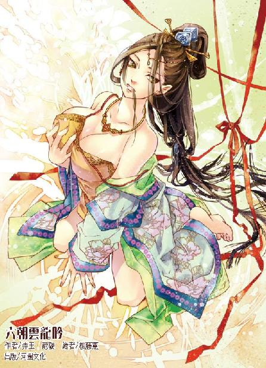

第33集·宝刀屠龙
临安篇（2/10）
出版日期：2012-04-05
【本集内容简介】
遇上林冲这等好汉，程宗扬正想拉拢到己方阵营，意外发现林娘子可能是黑魔海的高层人物！
这下可好了，难道出身光明观堂的李师师也和黑魔海有关系？镖局货物遭抢一事，究竟是谁设的圈套给谁跳？
云秀峰终于抵达临安，程宗扬却在前往密会的路上遭到禁军攻击！是他自己露出马脚，还是谁漏了机密？
※ ※ ※ ※ ※

封面人物：阮香琳
说起六朝的销金窟，莫过于各处会馆。馆中灯红酒绿，舞乐蹁跹，妖姬娈童，令人心醉神迷。丝竹绕耳、佳人在怀之际，一掷千金的豪客比比皆是。
不过对于一般平民来说，那些会馆都是可望不可及的所在。因此在一些繁华的城市中，面向平民的玩乐场所应运而生，临安人最耳熟能详的就是瓦子。
瓦子又称瓦舍、瓦肆，内设不同的表演区，以棚为名。棚内设有用来表演的舞台，因四面围着栏杆而得名“勾栏”。勾栏里通宵演出相扑、影戏、杂剧、傀儡、唱赚、踢弄、琴曲、戏法等各种节目。单临安一地，就有瓦子二十四处，单独只设一个勾栏的独勾栏瓦子还不计算在内。其中最大的北瓦有十三座勾栏，除了各色演出，更有看相、算卦、洗补衣物、酒水饮食、赌博……等等服务，比现代的娱乐城服务更加完善。
临安的瓦子通常以所在位置命名，便门瓦就位于临安城东南的便门之外。众人一进门，侍者便迎了上来，只不过见程宗扬带着两名兽蛮仆从，也不敢饶舌，老老实实地唱了个肥诺。
程宗扬报了张官人的名号，侍者道：“贵客里边请！”一边领着众人来到里面的牡丹棚。
瓦子中丝竹管弦之声不绝于耳，人来人往，热闹非凡。东侧一处大棚便是牡丹棚。系着彩带的大门外有一张逍遥榜，上面贴有各色纸条，写着“史书乔万卷”、“御前杂剧何宴清”、“作场相扑撞倒山、铁板踏”、“清唱诸宫调晴州碧云馆花如媚”，“说经长啸和尚”……前面是演出的节目，后面是表演者的姓名。
牡丹棚中间有一座半人高的木台，四面围着栏杆，后面有个出口通向戏房，便是艺人表演的勾栏。程宗扬进来时正看到两条大汉在台上相扑，两人都是一身的短打扮，筋骨如铁，皮肤如铜，往台上一站，如铁塔一般威风凛凛，单是这卖相就值几个铜铢。两人身手矫健，花巧又多，在台上你来我往地演出诸般技艺，引得勾栏外一片喝彩声。
青面兽和金兀术看得牛眼都快瞪了出来，只见台上两人龙腾虎跃，忽然一个虎扑撞作一团。双方贴身相斗，险象环生，青面兽盯着两人的手脚，表情乍惊乍喜，一副沉浸其中的样子，金兀术颈后血管怦怦直跳，倒有几分像是忍不住跃跃欲试，让程宗扬赶紧把这两头牲口拉走，免得生出事来。
秦桧笑道：“城里的相扑多是花架子，真要看相扑，还得到城外去。那边的地下相扑场不但有六朝击技高手，听说还有几名兽蛮相扑手。一场输赢可达数万银铢。”
“免了吧。要看相扑，我倒觉得女子相扑比较对胃口。”程宗扬眉飞色舞地说道：“两个水灵灵的大姑娘，身上只有一条巴掌宽的布条，光溜溜地在台上扭成一团，你拉我腿，我拧你屁股，那才过瘾。”
金兀术不屑地哼了一声：“吾……”
“闭嘴！”程宗扬一声断喝，恨恨道：“不解风情的家伙！你懂个鸟！”
程宗扬一边说，一边装作不经意地朝后扫了一眼。
林冲戴了一顶毡帽，打扮成闲汉的模样，袖着双手远远跟在后面——林教头实在不适合干盯梢这活儿，那身出众的气质，连自己这个菜鸟都瞒不过。
两侧的腰棚摆着桌椅，旁边还有几间精致的小阁。那侍者老实领着众人来到一间精阁，赔着小心道：“此处便是张官人订的座子，贵客慢坐。”
程宗扬丢给侍者一枚银铢，打发他离开，然后坐下来心不在焉地看着勾栏的表演。
秦桧熟络地碾碎茶饼，分茶、点茶，做足帮闲清客的工夫，一边道：“在下方才说的生意，还请公子三思。”
程宗扬倚在案上笑道：“拿天下当生意做，你是想当吕不韦吗？”
秦桧奇道：“这位吕公是哪位先贤？”
“奇货可居你没听过？拿秦王当生意做的大商人，吕不韦吕相国。”
秦桧思索良久，“公子莫非记错了？秦国并无姓吕的相国。”
吕不韦居然没有？难道是被赵鹿侯先下手干掉了？程宗扬只好苦笑。别人穿越都能当先哲，前知五百年后知五百年，自己连马后炮都能打瞎。
程宗扬一边看着勾栏，一边和秦桧闲聊，一手在桌下慢慢摸索着。
片刻后他把一支小小的竹筒收入袖中，然后往椅上一靠，学着临安人的样子叫道：“好！”
※ ※ ※ ※ ※
纸上用蝇头小楷密密麻麻写满了字迹，程宗扬刚看了三分之一就意识到自己捡到宝了。
情报中详细列明了宋国参与江州之战的所有军队，除了上四军的捧日军和龙卫军，又新调用了虎翼军、胜捷军、静塞军、归圣军、广武军，合计五万余人，每一军的消息详细到营指挥使一级，人数准确到个位。
这样的消息可谓是金不换，但更让程宗扬上心的是另外一段。那人在情报中透露：接连三场大败之后，宋国朝中一片哗然，连宋主都有退兵的意思，只有贾太师一意孤行，以辞位要挟，坚决出兵。
从描述中看得出，贾师宪如今已经被逼到悬崖边上，一旦宋军在江州失利，他便相位不保。情报中活灵活现地描述了朝中各位重臣包括宋主的反应，令人犹如目睹。
程宗扬把那张纸递给秦桧，“你来看看，有意思吧！”
秦桧一目十行地看过，然后道：“得此人之助，江州如得数万雄师！”
“奸臣兄，你猜猜这人会是谁？”
秦桧沉吟道：“此人能接触到如此多的消息，多半是两府的书吏。不过他连宋主的言谈都能接触得到，那还有一个可能……”
程宗扬与秦桧异口同声地说道：“太监！”
以岳鸟人不按常理出牌的风格，完全有可能在宫里放几个太监当卧底，甚至有可能是童贯——那个历代唯一被封王的大太监。
程宗扬手指敲着桌面，半晌道：“在明庆寺的祈福榜上给他发条消息，让他帮我查个人。”
线人提供的情报已经证明了他的能力，程宗扬不想干坐着等他送情报来，把这样一个出色的线人浪费掉。至于这个神秘人会不会帮忙就说不准了。
然而只隔了一夜，第二天，需要的消息都得到了相应的回答，详细的程度远远超过程宗扬的想象。
假如不是所有消息都写在一条两指宽的纸条上，程宗扬会以为自己在看太尉府收藏的档案。那名线人提供的消息从林冲的家世列起，一直到他被借调到皇城司的全部经历，无一疏漏。
一个太监有门路接触到两府的情报并不算难，但在如此短的时间内拿到军方的情报，恐怕不是一个太监能做到的。
秦桧拍案道：“此人定是太尉府的书吏！”
“不一定吧。”程宗扬指着纸条后面几句，“‘二月十八，至吏部，取筠州官员各档，查常平仓失火原委。十九，请查客卿程某，三请得允。至明庆寺，与菜园僧晤……’如果是太尉府的书吏，怎么可能连林教头调到皇城司之后的事也了如指掌？”
“皇城司，”林清浦道：“只有皇城司的人才有如此手段。”
“说的好！”程宗扬大笑道：“我也猜这人在皇城司！”
秦桧微微一笑，家主一直刻意拉拢这名影月宗的高足，连星月湖线人的事也不瞒他。知道得越多，林清浦就越难以脱身。不过家主下这么大力气，也着实对得起他了。
秦桧想了想，又道：“公子，林教头已经查到了咱们头上，是不是该敲打他一下？”
“用不着。”程宗扬笑道：“咱们明天去拜访一个人，林教头要是还跟着就热闹了。”
“谁？”
“花和尚鲁智深。”程宗扬笑道：“既然遇见了，于情于理，咱们都该拜访一下臧和尚的师兄。”
秦桧提醒道：“虽是一计，但林教头和鲁大师不过是一面之交，未必有太深的交情。”
“这你就放心吧！”程宗扬信心十足地说道：“他们两个都是义薄云天的好汉，虽然是刚认识，交情却不是一般的深厚。花和尚啊花和尚，你若是替我当了挡箭牌，免得林教头整天像吊靴鬼一样跟着我，我就请你吃狗肉！”
秦桧和林清浦都笑了起来。
青面兽门也不敲地闯进来，“主人，有人找你。”
“谁？”
“好像姓水……”青面兽抓了抓脑袋，“名字湿乎乎的……唔，乃是塔上那个漂亮美妞。”
“李师师！什么湿乎乎的！再乱说，扣羊！”
青面兽抗议道：“本来就是里面湿湿的！”
“哎呀，看不出来啊！青面兽，你还是一头青面淫兽！”
※ ※ ※ ※ ※
“师师小姐芳驾光临，有失远迎。”
程宗扬满面春风地迎出来，礼数周全地说道：“本来该小可去府上拜会，怎敢劳动师师小姐亲临？”
当日程宗扬只给李师师留了一个雪隼团分舵的联络地点，没想到她会辗转找到自己。
“我没有住在家里。”
程宗扬一怔，第一个念头就是：这丫头跷家了？
“我在姨娘家住。”李师师轻声道：“我不想回镖局。”
程宗扬一阵失望，但看到她楚楚动人的风姿，心里那点失望立刻烟消云散。
李师师咬了咬嘴唇，“我想出去走走。”
程宗扬微笑道：“义不容辞。”
很平淡的四个字，却让李师师眼圈一红，险些堕下泪来。程宗扬最见不得这个，连忙道：“我们去北瓦吧。我昨天去了便门瓦，里面什么都有，听说北瓦比便门瓦还热闹。”
听到瓦舍、勾栏那种去处，李师师略微皱了下眉，软语道：“小瀛洲好吗？”
李师师的口音是临安语调，本就软秾可喜，再加上她娇美的容貌，让人兴不起半点反对的意思。只不过程宗扬从没听过这地方，一时接不上口。
秦桧解围道：“小瀛洲在西湖湖心，有三潭印月的美景。”
程宗扬拍了拍额头，干笑道：“如此风雅的去处，我怎么会想不起来？会之，快叫两辆车。”
不多时，两乘马车从院中驰出。李师师云英未嫁，虽然程宗扬很想和她同乘一车，大家聊聊天、谈谈心什么的，终究厚不了这个脸皮。
车内跟着的是敖润。薛延山的伤势这两日略显稳定，换了冯源去照应，他才抽身出来。有雪隼团在临安的分舵帮忙，打探到的消息更加详细。
“李寅臣这人在江湖中名声并不好。”敖润道：“人是个精明人，只不过没什么骨气。这次威远镖局失镖蹊跷得很，本来有人劝过李总镖头别接，太尉府的生意不是好做的，但李总镖头一心想巴结高衙内，一口应承下来，结果就出了事，几名镖师、趟子手，一个都没回来。”
程宗扬道：“威远在临安不算什么有名的镖局，高衙内怎么想起来把那么一大笔财物交给他们？”
敖润道：“听说李寅臣为了攀上高太尉的关系，年前去太尉府送礼，不知道烧了谁的高香，竟然是高衙内亲自接待的。后来高衙内照顾威远镖局的生意，把这批货物交给威远镖局押运。”
李寅臣是个软骨头，不至于连李师师的娘也忍心看着唯一的女儿往火坑里跳吧？
程宗扬沉吟半晌，“李总镖头的夫人是哪位？”
“李总镖头的夫人姓阮，也是武林中人，江湖上有个绰号叫‘销魂玉带’，名声比李总镖头还大几分。”
“是吗？”
“那是！销魂玉带阮女侠不但性情豪爽，而且听说生得貌美如花，当年嫁给李寅臣，不知道多少人在背后咽口水呢。”敖润道：“镖局失了镖，李总镖头顿时慌了神，四处求人，但一听说是高衙内的货，谁都不敢出头。李总镖头几次带着重礼登门赔罪，都被太尉府的人赶了出去。”
“会之，依你看？”
秦桧道：“属下以为，此事蹊跷之处甚多。”
“没错。怎么听都像是高衙内挖了个坑，让李总镖头往里面跳。”程宗扬笑道：“这个坑不小啊！李总镖头掉进去就出不来了。”
敖润道：“程头儿，我瞧李镖头那闺女长得怪水灵，配程头儿正合适。”
“好让你去找月副队长？”程宗扬玩笑道：“老敖，你就死了这条心吧！”
敖润叫道：“程头儿，你冤枉我了！月队长跟你天造地合，我老敖心服口服。若有一个字是假的，我立马跳湖里变王八！”
“说得嘴响，你跳一个我看看！”
“今儿不成，”敖润一边大摇其头，一边说出理由，“水太凉。改天暖和了，我老敖跳个给大伙瞧瞧！”
众人都笑了起来。程宗扬笑骂道：“少来劲儿。”然后摸着下巴想了一会儿，“这事儿有点麻烦。”
秦桧道：“高太尉位高权重，又是军方的人。还有，云六爷这两日也该到临安了。”
他话只说了一半，意思却很清楚：正事要紧，这时候招惹高衙内并不合算。
程宗扬却道：“不是这个麻烦——明白告诉两位，师师姑娘既然自己送上门来，就是我盘里的菜——行了行了，你们别笑。”
秦桧和敖润咳嗽着坐好。
程宗扬道：“我跟你们说，这口鲜菜我是吃定了！不过你们也看见了，那丫头够文艺的，想吃到嘴里得花时间慢慢来。这些都不算麻烦，真正麻烦的是高衙内，那小兔崽子是有名的吃相难看，我这边还在慢慢撒网呢，他蹿出来一口把我的菜吃了，我哭都没地方哭去，所以说麻烦啊！”
敖润品味半晌，“程头儿，你说这么多，我琢磨着是不是你怕吃得太急，菜自己跑掉，慢慢吃呢，又怕别人抢了？”
程宗扬点了点敖润，赞许道：“有慧根！”
“那你把菜藏起来，自己慢慢吃不就得了？”
程宗扬一拍大腿坐了起来，“老敖，我发现你是个人才啊！这慧根活活有我大腿这么粗！你是活佛转世吧？肯定的！你骗不了我！”
众人哄笑中，马车一前一后驰向西湖。
※ ※ ※ ※ ※
小瀛洲是西湖中的一座岛屿，整座岛屿呈田字形，湖中有岛，岛中有湖，著名的三潭印月就在岛屿西南。岛上桥廊相接，亭轩星布，景色如诗如画。岛内有座保宁寺，但僧侣不多，也比较像和尚的样子，因为没有明庆寺的和尚那么“热情”。
与佳人徐徐漫步岛上，程宗扬很想诗兴大发一把，想来想去还是决定不冒丢脸的风险。李师师隔着两步的距离与他并肩而行，虽然秀色犹如琼花，但眉宇间一抹凄婉的哀怨挥之不去，令人说不出的怜惜。
李师师的姿容在自己见过的女人中，完全可以排在前几位。虽然年纪尚轻，又是光明观堂的弟子，少了一分名妓的妩媚，多了几分幽淡如兰的气质，但偶然一个明眸微转，便流露出动人艳致。
夜风徐来，吹乱了李师师的发丝。看到她翘起如明玉般的纤手，轻轻将飞舞的发丝拨到耳后，程宗扬一时间有些恍惚。
她玉指微翘着，轻轻拨弄发丝，这样一个不经意的小动作，却流露出浓浓的女性媚艳风情，让程宗扬恍惚之余，不得不相信这世间真的有天生媚骨。纵然出现在面前的李师师没有堕入青楼，受到光明观堂多年来清心静意的培养，仍然无法掩盖她天生的妩媚与性感。
自己何其幸运，在她绽露出醉人芳华的成熟时节之前就遇到她，亲眼看到这个名妓清纯的一面，能看着她从泉水一般的清纯少女，一步步走向风情万种的绝代艳姬。
程宗扬不禁想入非非，既然光明观堂的教育无法改变李师师骨子里的风情，那么同样受光明观堂教育的鹤羽剑姬，在冷漠的面纱下，是不是还潜藏着潘金莲的妖媚与淫浪？
“他们都劝我去侍奉高衙内。”
少女幽幽的叹息声，使程宗扬连忙收回思绪。
李师师开口道：“爹爹说，如果我去侍奉高衙内，镖局与高太尉拉上关系，生意至少会好一倍。姨妈说，女孩子终是要嫁人的，高衙内有钱有势，虽然只是一个妾，但受宠的妾比正妻差不了多少。”
程宗扬生出一丝怪异的感觉。那位凝姨给他的感觉并不是那种贪图钱财、俗不可耐的市井女子，相反，无论是她的容貌还是言谈举止，都有让人心动的优雅。是自己看错了她的为人？还是有别的理由？
“我不想见那个人，一想起那个人的样子，我就觉得恶心。”
程宗扬道：“如果你想离开临安，我可以……”
李师师缓慢却坚决地摇了摇头，神情凄婉地低声道：“如果我走了，他们就什么都没有了。他们对我很好，连这件事，他们也认为是为我好……虽然我不高兴，但我一点也不想让他们伤心……”
两人都沉默下来，但少女如泣如诉的低语仿佛还在耳边萦绕。自从知道李师师面对的是高衙内，程宗扬就打心眼儿里不想招惹这个麻烦。有岳鸟人的前车之鉴，自己可不想也落得满天下的仇家，走到哪儿都被人喊打喊杀。帮助李师师离开临安已经是自己能做到的极限了。
两人穿过竹径通幽，眼前忽然一片灯火通明。前面的心月台是临安人平常赏月的所在，此时燃灯举火，却是几名少年在台下宴饮。
李师师厌恶地皱了皱眉头，正要转身离开，一名少年却叫了起来，“这不是李寅臣的女儿吗？”
“可不是嘛！昨天才在雷峰塔见过的！竟然跟着个男的半夜游湖，老大这下惨了，还没进门就戴了绿帽子。”
“老大昨天怎么心软了？竟然把这个雏儿放走了！兄弟们！不如咱们今天把这小妞带回去，让老大快活快活！”
一群恶少轰然叫好，李师师心下恼怒，玉脸微微发白。程宗扬没兴趣和这些小屁孩瞎折腾，拉了拉她的衣袖，李师师却凝立不动。
程宗扬有些想咬牙。和这些小屁孩撞见是偶然，这丫头不肯走，却是用这个机会让自己出面了。如果是小紫，肯定娇笑一声，跑得无影无踪，等他们打完再来收拾残局，把便宜捡回家。程宗扬也能这么做，就是良心有点过不去。果然良心才是自己最大的敌人。
为首的少年趾高气昂地走过来，先挑起拇指点着自己的鼻子道：“我叔叔是护国节度使，检校太傅，开府仪同三司梁师成！”
程宗扬笑嘻嘻上前一步，看着像是打躬作揖地要去扶他，却阴损地一脚踩住他的脚背。梁公子刚要迈步，就一头栽到李师师面前，“哇”地啃了口泥。
程宗扬也不扶他，只笑呵呵看着，不咸不淡地说道：“梁少爷小心。天凉，泥吃多了容易胃寒。”
后面的恶少都跳起来，一边骂着脏话，一边吆喝手下的恶仆收拾这不开眼的家伙。
程宗扬瞧准高衙内不在其中，这个梁师成也不知道是哪门子的节度使，自己听着耳熟，但一时想不起来，估计不是什么了不得的人物，用不着客气。
程宗扬俯身拖着那位梁公子的衣领，把他拽起来，顺手给了他一个耳光。梁公子当场就被打懵了，呆瞪着眼，沾满泥土的口鼻喘着粗气。
程宗扬若无其事地拍了拍手，“哟，一眨眼工夫，梁少爷就发福了？这脸怎么变这么大了？”
李师师虽在羞怒之中，也被眼前这一幕逗得一笑。接着她目光露出一丝欣赏的神色，没想到这个年轻商人真的会动手。梁师成的名字程宗扬不知道，她却是听过的。贾师宪是宋国最大的权臣，梁师成则是最受宋主信任的宠臣，莫说临安的平民，就是朝中的高官也没有几个敢招惹。这个姓程的晴州商人却说打就打，这份胆气着实令人佩服。
梁公子半边脸皮紫胀着肿起来，那帮恶少暴跳如雷，“反了！反了！快把这厮给我抓起来！”
一群恶仆蜂拥而上，叫嚣着拿出棍棒上来厮杀。
秦桧、敖润和青面兽一直远远跟在后面。这边闹得天翻地覆，秦桧一副意态从容，丝毫没把那些恶仆放在眼里。敖润也乐呵呵抱着膀子在后面看笑话，凭自家公子的身手，这点恶仆根本不够瞧的，公子正在英雄救美，老敖若硬抢了公子的风头，也太不开眼了。
但不开眼的也有。两个人抱着肩膀看热闹，第三个却按捺不住了。青面兽一看到有人敢跟给自己羊吃的主人炸刺，顿时激起凶性，一步跨过去，摘下背后的棍棒。
青面兽用的是丈二长枪，但在城中不好背着凶器招摇过市，程宗扬让他把枪头拧了，充作棍棒。这会儿他两手一抖，枪杆如同蛟龙出水，将两名恶仆打得旋转着跌开，然后挑在一名家丁胯下，将他挑得飞过岸边的柳树，“噗通”一声栽进湖里。
在荆溪时，程宗扬已经见识过青面兽的手段。兽蛮人一向是以力取胜，大刀大斧、大棰大盾用得多，这家伙却有一手不俗的枪法，不知道是从哪儿学的。
青面兽在选锋营干过，一出手全是杀人的功夫。如果不是少了枪头，只消这一招，那些恶仆至少要丢下三具尸体。
眼看斗不过青面獠牙的兽蛮大汉，那些恶少唿哨一声，后面几名家丁拿出刀剑，拼着又被打倒两人，一阵乱砍，将那兽蛮汉子的枪杆砍去数尺。
双方正打得热闹，忽然梁公子用变调的声音惨叫道：“停——”
恶仆们停住手。只见那个年轻人拿出一柄匕首贴在梁公子脸上，嘴角虽然带着笑，眼中却透出视人命如草芥的狠劲。
众恶仆与他目光一触，心头顿时升起一阵寒意。临安城有的是不要命的地痞破落户，但这年轻人的眼神一看就是杀过人的，恐怕还不只一个。那些恶仆心头发紧，再没有一个敢动。
程宗扬慢条斯理地刮去梁公子面上的短髭，然后拍了拍他的脸颊，“大伙瞧瞧，梁少爷这胡子刮干净，是不是俊俏多了？”
梁公子牙关咯咯作响，有心放几句狠话，却一个字都说不出来。
程宗扬脸一板，抬脚把他踢开，“滚！一群杂碎，我见你们一次打一次！”
梁公子捂着脸跌跌撞撞跑进人群，他还觉得不放心，一直逃到船上才惊魂甫定，叫道：“快走！快走！”
那些恶少也被吓住了，慌忙解开停在岸旁的船只，一个个逃命似的离开小瀛州。
程宗扬伸出手，做了个“请”的动作，“师师小姐，我们接着赏月吧。”
李师师的目光又是惊讶又是欣喜，看着他伸来的手掌，犹豫了一下，才把手放在他的掌心。
李师师的手掌柔滑之极，纤软得仿佛花瓣。程宗扬心头一荡，握着李师师柔荑的手掌又紧了几分。
湖上忽然传来一阵大骂。离岸十余丈，那群恶少又添了几分底气：打不过我就骂死你！
梁公子破口骂道：“小贱人！敢在临安和我们十三太保作对！活腻了！”
程宗扬道：“别理他们，就当是几只癞虾蟆在叫。”
李师师嫣然一笑，娇靥露出一个令天际明月也为之失色的动人笑容，握紧他的手掌。
握着小美人儿的纤手，程宗扬不由大晕其浪。那几名恶少都红了眼，梁公子捂着脸跳脚道：“小贱人，天生的淫材儿！装什么正经！告诉你！你娘那个老骚货早就被我们老大上过了！你还要叫我一声干叔叔呢！”
李师师身子一僵，脸色顿时变得煞白。
梁公子像打了胜仗一样得意地说道：“你娘还是什么女侠呢！为那点货求到我们老大床上，只要能饶过你爹那个破镖局，做什么都行！送上门的浪货不弄白不弄！我们老大当场就把你娘办了！从头到脚搞了个快活！”
“老敖！”
“有！”
敖润猿臂一展，拉开铁弓，“飕”的一声，一支利箭从梁公子头上飞过，将他的金冠射得粉碎。接着敖润搭上长箭，如豹子一样瞄向他的咽喉。
梁公子嘴巴哆嗦了几下，然后白眼一翻，倒在船上。
程宗扬面沉如水地拉起李师师，“走！”
李师师坐在车上，神情呆呆的，明眸一片灰色。直到马车驰入城门，行驶在青石板路上，她才“哇”的一声痛哭出来。
李师师伏在程宗扬肩上，哭得肝肠寸断。程宗扬连句安慰的话都找不出来，只好轻拍她的香肩，聊作安慰，一边暗暗希望这段路越长越好。
可惜再长的路也有终点。午夜时分，马车在怀远坊一处巷口停下。
程宗扬道：“司营巷——是这里吗？”
李师师点了点头，她已经拭去泪痕，眼圈还微微发红。她没有再说什么，向程宗扬施了一礼便下了马车。
司营巷里都是临街的两层小楼，虽然不及城中达官贵人的豪宅华墅，但也看得出是殷实人家。李师师敲敲一处宅子的房门，一名老仆开门请她进去。
程宗扬叹了口气，这个小美人儿虽然够聪慧、有心计，但在命运的蛛网上，仍然是一只脆弱的蝴蝶。
尽管有当上总镖头的父亲、有一个了不起的师门，仍然无法摆脱命运的捉弄，可以想象她即将遭受的羞辱。到那时，即使光明观堂想去维护宗门起码的体面，这个少女也未必肯回头。成为一代青楼名妓，也许已经是她最好的归宿。
不过现在有了自己的出现，无论如何也不会让她走向宿命的青楼。
程宗扬敲了敲车辕，正准备吩咐敖润离开，忽然眼角瞥到一个人影。他怔了一下，接着颈后的汗毛猛然竖起。
一个药婆打扮的女子悄悄推开门，从李师师刚进去的宅中出来。夜色已深，她又专挑檐下的暗处贴墙行走，行迹隐秘。出了巷口，一辆马车突然从背后驰来，药婆往路旁让了让，一边暗自戒备。
车门忽然打开，里面伸出一只手，勾了勾手指。药婆愕然之下，接着面露欣喜，毫不犹豫地登上马车。
※ ※ ※ ※ ※
“哦……”
那女子螓首昂起，喉中发出一声娇媚的呻吟。
她上身还穿着药婆的衣衫，下身却脱得一丝不挂，这会儿柔顺地伏在座椅上，双臂张开，扶着晃动的车厢，白光光的大腿朝两边敞开。她一边顺从地耸起雪白的屁股，让车内的男子从背后进入，一边向后挺动着，迎合阳具的抽送。
以这样一种毫无保留的姿势敞开身体，那女子显然对身后的男子有极大的信任。程宗扬两手握住她的纤腰，一边挺动阳具一下一下地干着她的蜜穴，一边从背后审视她的反应。
“上忍的阳具好硬……干得好深……”
程宗扬特意看了她的菊肛一眼，嫩肛软软的，因为蜜穴被阳具杵入而有些变形，随着阳具进出，被扯得不断开合。
假如她有所戒心，身体不可避免会出现一些紧张的反应，绝不会像这样温柔如水。
程宗扬坏笑道：“游老板的桃源洞和以前一样美妙啊。”
那女子包头的布巾散开，粉面半露，正是广阳赌坊的老板游婵。
她与程宗扬曾有过露水之缘，此时他乡重逢，才发现这位上忍的手段有了翻天覆地的变化。蜜穴被粗大的肉棒捣弄着，体内快感如潮，她颤声道：“上忍的阳物又暖又热……奴婢……奴婢快要……快要……哦——哦！”
“这么快？”
自己虽然用了一点房中术的技巧，却没想到游婵这么不济事，几下就被搞得泄了身子。
游婵脸色潮红，娇喘细细地说：“奴婢从上次和上忍欢好过，再没和人做过……飞鸟大爷的阳物好厉害，每一下都像干在奴婢的心尖上……”
程宗扬笑道：“来，换个姿势。”
游婵媚态横生地瞥了他一眼，然后听话地翻过身子，躺在座椅上，接着抬起一只玉足，朝旁边张开，露出玉股间仍在微微翕动的玉户。
程宗扬俯下身，游婵的双手扶住他怒胀的阳具，顺从地纳入蜜穴。
“没想到会在这里遇到上忍。”
游婵眼中的喜悦没有半点作伪。她只是黑魔海的边缘势力，当初暗杀小太监计好被程宗扬撞见，还是程宗扬替她隐瞒此事。因此对这位供奉，除了下属对上级的服从之外，别有一分私人的感激。
游婵一边与程宗扬交合，一边道：“两个月前仙姬传讯，说晴州出了些纰漏，上忍遇袭失踪，让各地分舵留意上忍的下落。仙姬说，当日事出仓促，圣教多有照顾不周之处，万望上忍见谅，诸事都好商量。”
在晴州和黑魔海交手是三个月前的事，游婵接到消息差不多在两个月前。当日清剿黑魔海在晴州巢穴之后，自己透过泉玉姬对黑魔海临阵弃友的行为表示了极大愤慨，声称双方合作就此作罢，随即赶往江州。泉贱人北返长安，音讯不通，没想到黑魔海还在寻找自己的下落。
程宗扬哼了一声，生硬地说道：“此事勿要再提。”
游婵赔了一个妖冶的笑容，“仙姬说，上忍受惊，圣教自当赔罪。请上忍明鉴，圣教已取出秘库的十藏经，愿与上忍交换。”
这个十藏经肯定是飞鸟熊藏梦寐以求的物品，不然剑玉姬也不会专门提出来以打动他，可惜自己对十藏经一窍不通，只能哼哼两声掩饰过去。
游婵道：“奴婢对上忍的神术半点不懂，不过仙姬说，另一位飞鸟上忍已经闭关，来日必能成就飞鸟一流的无上忍术。”
程宗扬脸色稍霁，“这也罢了。我什么时候想去见她，自己就会去了。哼，黑魔海临阵弃友，害得本忍险些被杀。若不是你，本忍也不会出来见面。”
一句话将两人的关系又拉近几分，让游婵感觉到彼此间与众不同的亲近。对于游婵来说，这位上忍不仅替她掩盖了足以令自己粉身碎骨的秘密，又是教中特意聘请的供奉，身居高位。若与他保持亲密的私人关系，在教中就有了一个得力的靠山，因此极力游说他重归黑魔海。
程宗扬不置可否，只问道：“你为什么会在这里？”
这才是他最关心的。游婵是黑魔海在广阳发展的暗桩，有什么事会让她亲自来临安？更重要的是她刚才见了谁？李师师？凝姨？男主人？还是宅里的其他人？李师师背后突然出现黑魔海的影子，让程宗扬嗅到一丝危险的气息。
“奴婢这次来临安，是为了教内一件大事。”游婵欲言又止，最后歉然道：“请上忍见谅，奴婢不能说得太多。”
“哟西。你做得很好。”
游婵缠着他的腰身，媚声道：“不过此事已经了结，奴婢刚缴了令旨。上忍若是要让奴婢伺候，奴婢还能在临安多留几日……”
程宗扬的心头翻翻滚滚。游婵既然是去缴令，她刚才见的人在黑魔海的地位绝对不低，甚至可能是黑魔海在宋国的中枢。那个人究竟会是谁？
程宗扬淫笑着在游婵脸上摸了一把，“她生得难道比你还美吗？”
游婵抛了个媚眼，“奴婢蒲柳之姿，怎么能跟凝玉姬相比？”
※ ※ ※ ※ ※
程宗扬在室内来回踱步，眉头拧得像要打结一样。他猛地停下脚步，朝众人道：“你们再确认一遍，她真的不会武功？”
青面兽道：“吾……”
“你给我闭嘴！”
青面兽一脸不服气地闭上嘴。
俞子元道：“我修为不行，确实看不出来。秦兄你看呢？”
“子元兄过谦了。”秦桧道：“以秦某之见，那女子确实手无缚鸡之力。”
程宗扬道：“李师师唤她‘凝姨’，黑魔海的人从她家里出来，又说接头的人是凝玉姬——世上哪儿有这么巧的事？可黑魔海的御姬怎么可能不会武功？”
秦桧道：“公子莫急，敖润打探消息也该回来了。师师小姐的姨母是否有嫌疑，一查便知。”
“等等！”程宗扬一手扶住额头，陷入沉思。
众人不敢打断他的思路，片刻后程宗扬抬起头，秦桧立刻道：“公子可是发现了什么线索？”
“有，但和那位凝姨无关，是另一桩。游婵说她来临安是为一件大事——有什么事会让黑魔海必须把她从广阳调来？”程宗扬慢慢道：“游婵的身份只是广阳一个赌坊的老板，但她的亲兄游雍是太湖盟和翻江会的双龙头！孟老大在晴州挑了黑魔海的巢穴，这边赶往江州助战的雪隼佣兵团就在太湖出了事——黑魔海的手伸得好长！”
俞子元、秦桧都露出凝重的神色。片刻后，俞子元道：“黑魔海收容游雍是在公子到晴州之前，难道那时他们就算定要在太湖伏击雪隼团？”
“不可能！”程宗扬道：“除非那个仙姬是活神仙！”
秦桧道：“公子的猜测有九分可信。黑魔海拉拢游雍只是下了一着闲棋，正好在此时用上，只怕这样的闲棋，黑魔海在六朝都布过不少。”说着他不禁佩服起来，抚掌道：“落子绵密，布局深远，这位仙姬好生了得！”
俞子元道：“如果不是公子撞见，谁也想不到黑魔海在临安布有棋子，而且还嫁了人。”
“打听到了！”敖润带着一股寒风推门进来，兴冲冲道：“程头儿！你猜那座宅子是谁的？”
敖润带来的消息不是什么秘辛，随便找个懂行的打听就能问出来。但程宗扬听在耳内表情却说不出的古怪，用做梦般的口气道：“林冲林教头……李师师的姨妈是林娘子？”
“没错！”敖润道：“阮家姐妹俩，长姐叫阮香琳，嫁给威远镖局的总镖头李寅臣。小妹阮香凝，嫁给八十万禁军教头林冲。阮香琳是林州小碧潭门下，人称‘销魂玉带’，门派不怎么起眼，她的修为在门中算是出类拔萃的。阮香凝没习过武，早早就嫁给禁军的林教头。林家夫妻一直没有子裔，林娘子经常请尼姑、道姑、药婆之类的上门，乞求早日得子。”
俞子元道：“难道黑魔海在临安的头目是这位林娘子？”说着他倒吸了口凉气，“黑魔海的人嫁给禁军教头，难道已经把手伸到宋国禁军里面了？”
“也许是林教头。”秦桧沉声道：“有八十万禁军教头的身份做掩护，他们在临安行事方便百倍。”
敖润也道：“程头儿，老敖插一句，那位林教头盯上咱们，不会是黑魔海的意思吧？”
秦桧与俞子元异口同声地说道：“很有可能！”
程宗扬用手拍着额头，紧张地思索着。如果林冲真是黑魔海的人，自己一到临安就被他盯住，很有可能自己根本就没有脱离过黑魔海的视线，始终处于他们的监控之下。
程宗扬放下手，斩钉截铁地说道：“不会。”
虽然在这个世界里，武二郎是个臭不要脸的流氓暴徒，潘姐儿里外都透着一股圣女味儿，林教头成为黑魔海的卧底也没有什么好奇怪的，但程宗扬有种强烈的预感：林冲与黑魔海并没有什么关系。
如果自己猜的不错，林冲与黑魔海没有关系，那么黑魔海精心培养的御姬奴嫁给一个不起眼的禁军教头，其中的缘由就很耐人寻味了。
忽然程宗扬露出一个充满狡黠意味的笑容，“想知道他们的底细并不算什么难事。”
秦桧眼睛微亮，“计将安出？”
程宗扬胸有成竹地说道：“兄弟们，咱们该去拜访一趟鲁大师了。”
※ ※ ※ ※ ※
一个和尚赤手倒拔垂杨柳的壮举，这些天在临安传得沸沸扬扬，花和尚鲁智深的名号也随之不胫而走。每日从早到晚，明庆寺菜园子的矮墙外都聚了不少闲人来看稀奇，一边看，一边还指指点点。
“瞧见没？这就是倒拔垂杨柳的鲁大师！”
一个商贾啧啧赞叹道：“这两膀足有千斤力气！难怪能将垂杨柳拔起来，果然是好神通！”
旁边有人暗笑道：“客官是外地来的吧？其实鲁大师拔的杨柳不是树，是个大活人……”
“佛心庵的小尼姑……”
“……叫杨柳的。”
“要不是花和尚呢……”
叽叽歪歪的笑声中，几个泼皮翻墙出来，“走走走！有什么好看的！”
有人认得这些泼皮破落户，立刻一哄而散。有些不认得的还不服气，“菜园子又不是你家的，看看怎么了？”
“怎么了？”一名泼皮从墙上抽出半块破砖，横着眼道：“滚不滚？”
那人也杠上了，“这堂堂临安城，首善之地，你还敢打人不成？”
那泼皮龇牙一笑，拿起破砖朝自己的脑门上“砰”地一拍，顺势翻着白眼直挺挺倒在地上。
周围的泼皮立刻揪住斗口的闲人，嚷道：“救命啊！打死人啦！”
矮墙外乱成一团，十几个泼皮揪住那外地汉子，要他赔命还钱。
墙内鲁智深气宇轩昂，像擂鼓一样拍着胸口，“洒家行得端！走得正！身正不怕影子斜！还怕几个鼠辈瞎嚷嚷？”
秦桧挑起拇指，高声道：“豁达！”
鲁智深哈哈大笑，指着秦桧道：“洒家看你的打扮，还以为是个酸丁！唔，不错不错！怪不得能和小臧称兄道弟。”
程宗扬笑道：“臧和尚还俗后娶了一妻一妾，鲁大师，这你可不如他了。”
“娶婆娘拖家带眷操不完的心，洒家不耐烦这个。”鲁智深摸着光秃秃的脑袋道：“六根清净！六根清净！”
程宗扬拿起一根竹筷，敲着陶碗赞道：“赤条条来去无牵挂，烟蓑雨笠卷单行，芒鞋破钵随缘化。”
鲁智深又是一阵大笑，“好句子！痛快！痛快！当日五台山一别，二十年未见，不知洒家那臧兄弟如今在何处？”
程宗扬放下筷子，微笑道：“江州。”
鲁智深笑声一顿，眼中爆出一缕寒芒。贾太师兴兵讨伐江州，临安城已经尽人皆知。鲁智深虽然住在寺庙的菜园子里，也听说过一二，却没想到多年不闻音讯的师弟如今会在江州。
“鲁大师再来一碗！”程宗扬拿起酒坛，“这是小弟特意买来的烈酒，据说常人喝不过三碗，有个名号叫‘三碗不过冈’！”
“喝寡酒有甚趣味？小的们！把洒家炖的香肉拿来！”
鲁智深亲自动手，满满给程宗扬捞了一碗肉，“这锅香肉炖了四个时辰，滋味正足！来来来，尝尝洒家的手艺！”
鲁智深说的香肉就是狗肉，敖润道：“一黑二黄三花四白，大师这香肉一看就是上等的黑犬！”
鲁智深立刻对他刮目相看，“这位敖兄弟原来也是吃狗肉的行家！好好好！来一块！”
“狗肉滚三滚，神仙站不稳！老敖好口福！”敖润也不客气，下手捞了块香喷喷的狗肉入口大嚼，吃得汁水淋漓，一边挑起拇指含糊赞道：“好！”
鲁智深大笑道：“冬日进补，狗肉第一！原本今日要请我林师弟大快朵颐，各位兄弟来得正好！”
程宗扬笑道：“说到就到——那不便是林教头吗？”
林冲脸色有些僵硬地从园侧出来，朝众人拱了拱手，勉强露出一个笑容。他一大早就盯上程宗扬的梢，没想到这人在城中转了一圈，却来到明庆寺与鲁智深把酒言欢。林冲藏身不是、露面也不是，弄得骑虎难下。但他是豪杰心性，既然被人叫破，便不再藏头露尾。
鲁智深却没在意，把着林冲的手臂笑道：“林师弟！这几位朋友当日便已见过，却不知是我臧师弟的好友！大家都是好兄弟，同坐！同坐！”
林冲也不推辞，坐下来拿起酒碗饮了一口，赞了声：“好酒！”然后向程宗扬抱拳道：“八十万禁军教头林冲，不知阁下尊姓大名？”
程宗扬笑道：“林教头，你这就不厚道了。我的身份旁人不知，林教头难道还不知晓？”
林冲“嘿”了一声，“官府公事，程员外莫怪。”
鲁智深嚷道：“鸟的公事！我说林师弟，你就这点不好！凭你的身手，二十年只是个教头，不如抛开那点鸟功名，与洒家一道快活！”
林冲的手指微微一紧，良久后放下酒碗，苦笑道：“身世悲浮梗，功名类转篷。不瞒哥哥说，林冲蹉跎多年，这点功名之心早已淡了，只是拙妻尚在，学不得哥哥快活。”
“洒家方才说的吧！有了婆娘就是麻烦！”鲁智深摇了摇他的大脑壳，一叠声道：“喝酒！喝酒！”
秦桧、俞子元、敖润与鲁智深谈得投机，尤其敖润也是个好吃狗肉的，两人说起吃狗的心得分外投契，差点就在席间拜了把子。
林冲与程宗扬的交谈却是暗潮涌动，林冲话里话外都在打探程宗扬的来历，在筠州做什么生意。
“听说程员外祖籍盘江，林某冒昧，不知盘江在六朝何地？”
“小地方，南荒。”程宗扬笑眯眯道：“要按路程呢，离晋国倒是挺近。”
“程员外是晋国人士？”
“也算不上。化外之地，穷山恶水，尽出刁民。”
程宗扬扯着闲话，心里却在冷笑：林教头啊林教头，你这皇城司的差事已经干到头了，还操什么闲心呢？
说话间，一个小婢慌慌张张跑来，见着林冲便哭道：“官人，不好了！”
林冲一撩衣服，起身道：“锦儿，出了何事？”
“娘子今日到庙里上香，在五岳楼被一个歹人拦住不肯放。”
林冲怒从心头起，罗圈一揖道：“改日再来吃酒！哥哥休怪！”
鲁智深已经有了七八分酒意，一听之下，顿时暴跳如雷，喝道：“小的们！拿洒家的禅杖来！”
秦桧、俞子元和敖润都看着程宗扬，暗赞家主料事如神。
程宗扬慢悠悠吃了块狗肉，然后站起身，“光天化日，朗朗乾坤！这还有王法吗？走！给林教头助拳去！”
众人一哄而起。
五岳楼旁早已聚了一群人，一伙家丁将闲人挡在楼下，楼上高衙内正张着双手，将两个女子拦在栏杆拐角处。
李师师退在后面，美目冷冷盯着高衙内，默不作声。
那位凝姨又羞又气，粉面涨得通红，“清平世界，是何道理拦着奴家？”
“哎哟！哎哟！我这心病又犯了……”高衙内捂着胸口道：“小娘子，你就是本太岁救命的丸药，无论如何也不能见死不救哇……”
“公子自重！”
“小娘子救命啊……”
林冲急匆匆赶到楼前，几个家丁过来阻挡。他两手一分，顿时将那些家丁推得像滚地葫芦一般。林冲三步并作两步跃到楼上，一把扳住那恶少的肩膀拉过来，一边攥起拳头，一边暴喝道：“敢调戏我家娘子！且吃我一拳……”
待林冲看清那人的长相，不由一怔，话音未落，手先软了。
高衙内先是吓了一跳，待看清来的是林冲，一脸气恼地大叫道：“林冲！干你何事！要你多管！”
林冲脸上时青时红，拳头虽然举得高高的，却怎么也落不下来。
敖润佩服地小声道：“程头儿，你怎么知道林教头下不了手的？”
程宗扬微笑道：“高太尉主管禁军，正是林教头的顶头上司。调到皇城司之前，林教头每天都要在高太尉帐下听宣。他舍不得这个官身，当然下不了手。”
这边有家丁看出势头不妙，过来劝道：“教头莫怒！衙内多喝了几杯，到庙里散心，不认得是教头尊妻，多有得罪。”
高衙内叫道：“是他老婆又怎么了？给我抢过来！”
一名管家道：“少爷又喝多了，快扶着些……”
那些家丁知道林冲的身手，七手八脚把高衙内扶到楼下，牵马离开，管家又连声向林冲赔罪。
见到丈夫，凝姨眼圈不禁红了，紧紧拥着丈夫的手臂不敢松手。
忙乱间，这边鲁智深提着镔铁禅杖，带着一群泼皮破落户杀气腾腾地赶过来，“哪里来的狗贼！且吃洒家三百禅杖！”
林冲安慰了娘子几句，过来低声道：“是高太尉的衙内，不识得拙妻。林某本待痛打那厮一顿，太尉面上须不好看，且饶他一回。”
秦桧也道：“原来是高太尉的衙内。俗话道：‘不怕官，只怕管’。高太尉是林教头的本官，不好胡乱动手。”
鲁智深气沭怵道：“什么鸟太尉鸟衙内！若是洒家撞见，少不得一顿好打！林师弟，你自家婆娘被人……”
敖润连忙拉住他，“老鲁，喝醉了不是？瞎嚷嚷啥呢？”
鲁智深这才注意到林娘子，慌忙抱拳道：“阿嫂休怪，莫要笑话！”
程宗扬笑道：“我来送林教头和嫂夫人。师师小姐，请！”
林冲心头愤恨，秦桧和俞子元多方安慰，只阴沉着脸不说话。
李师师与程宗扬乘了另一辆马车，她靠在车窗边，望着外面的人群，半晌才轻叹道：“你说的没错。师师一直以为姨夫是当世豪杰，没想到只一个高太尉的名头，就意气全消，只能忍气吞声。官位、权力，真的比武功还吓人。”
程宗扬歉然道：“是我虑事不周。原想请师师小姐到庙里散心，没想到会撞见那厮。”
李师师眼波微转，“真的吗？”
“你不会以为是我把高衙内招来的吧？”
李师师沉默片刻，忽然道：“喂，凝姨是不是生得比我还美？”
程宗扬大笑两声，“瞧你问的，这难道还用说吗？”
“你也会用这种支吾的手段？”李师师挑了挑眉毛，“少滑头，你就答‘是’或‘不是’。”
程宗扬只好道：“师师小姐国色天香，凝姨虽然美貌，终究年纪大了些，怎么能和你比呢？”
“少哄我。那个高衙内见着凝姨就像丢了魂一样，看也不看我一眼。”
“他那种鸟人，纯粹是心理变态。我估计是他娘死得早，从小缺乏母爱，导致心理异常……”
李师师忽然眼圈一红，泪水仿佛断线的珍珠一样滚落下来，“我娘……”她只说了半句便说不下去。
程宗扬小心翼翼地说道：“你别哭。他们这种公子哥儿我见得多了，别的本事没有，吹牛皮一个顶俩，一百句也没一句真的……”
“都是你！若不是你让我和凝姨来明庆寺，哪里会撞见这个畜牲！”李师师失控一样泣声道：“那畜牲害了我娘，又想害我，又想害我姨娘……姓程的！你赔我娘！”
程宗扬不闪不避挨了她几记粉拳。李师师停下手，然后伏在座椅上痛哭失声。几天来的委屈，使这个少女再也无法承受。
程宗扬只能坐在她旁边，轻轻拍着她的背，免得她哀痛过甚，哭伤了身体。
到了巷口，林冲扶了娘子下来，勉强过来见礼，“多谢程员外，请到寒舍小坐。”
程宗扬笑道：“不用客气，改日再来打扰。嫂夫人，请慢走。”
阮香凝侧身施了一礼，低声道：“多谢公子。”
林冲、阮香凝、李师师带着小婢锦儿回到家中，程宗扬仍留在巷内，看着这座与黑魔海有千丝万缕关系的宅院，良久才道：“走！我们回去！”
※ ※ ※ ※ ※
一面尺许大小的水镜悬在室内，程宗扬、秦桧、俞子元、敖润、林清浦，包括金兀术、豹子头和青面兽都聚精会神地盯着水镜。
镜中是上午在明庆寺五岳楼的影像，从高衙内拦住阮香凝，到林冲赶来，整个过程历历在目。
秦桧断然道：“这位林娘子确实全无修为，除非她是第八级至臻境的绝顶高手，才能瞒过秦某的眼睛！”
程宗扬道：“巫宗要有第八级的高手还费什么劲儿？直接去南荒把死老头吊起来打！”
林清浦苦笑道：“各位已经看了三遍，再看林某就撑不住了。”
“我就说让你把灵飞镜取来吧，不是省你的力气吗？”程宗扬道：“行了，歇歇吧。”
林清浦收了水镜，豹子头“咕咚”咽了口口水，咧开大嘴道：“好女子！颇水灵！”
程宗扬笑道：“老豹看中人家林娘子了？告诉你，那是正宗的豹子头，你这赝品不算数啊。”
豹子头喷了口粗气，“吾才是真豹子头！”
“别废话了。”程宗扬坐下来，面对众人，“计划刚成功一半，下面要做的事还很多。子元，你联络咱们那位卧底，我要知道宋军的最新动向，尤其是物资的供给和安排，最迟明天下午要拿到。”
俞子元双脚一磕，挺胸敬了个军礼，“是！”
“老敖，你和雪隼团的兄弟分头盯住威远镖局和林教头的家里，一有消息立刻回报。顺便让人把冯大法替回来，说不定又要用到咱们的大法师了。”
敖润一手横在胸前，中气十足地说道：“遵命！”
“清浦，你联系云六爷，看他最快什么时间到。临安的粮价才八百铜铢，该涨涨了。”
林清浦微微躬身，“是。”
“老术、老豹、老兽！你们三个去趟城外，找一个叫野猪林的地方。”
金兀术道：“为什么要找野猪林？”
豹子头道：“有野猪！”
青面兽道：“吾甚爱食野猪！”
“金兀术！我每跟你说句话，你都要问个‘为什么’是吧？你再敢问一遍，我就——”程宗扬一指豹子头，“扣他的羊！”
“为……”
金兀术还没问完，豹子头就扑通跪下来，抱住他的双腿，撕心裂肺地叫了一声：“羊！吾的！”
金兀术终于闭上嘴，程宗扬扭头道：“会之，咱们两个去一趟悦生堂。”
“公子要去见那位廖先生？”
“不是。我打算买几本书……行了！千万别拍马屁，我就是奔着书中自有颜如玉去的。”程宗扬拍了拍肚子，“本员外打算把这儿都装满诗文，把那丫头镇住！喂，你们几个交头接耳的，笑什么呢？”
俞子元忍笑道：“老秦说，公子拍的位置有点偏下。那地方就是全刺满，也刺不了几首诗……”
“干！你们几个把死奸臣按住！老敖！你扒老秦裤子！老术，你拿根绣花针来，我亲手在他下面刺篇带插图的《长恨歌》出来！”
哄笑中，一名装着木腿的星月湖军士走进来，先敬了一个军礼，然后递上一张明庆寺祈福的红纸条。
程宗扬接过来，上面写着：“君子福履，子孙有吉。橡树瓦孙官人二月二十一急求。”
“橡树瓦在什么地方？”
俞子元道：“橡树瓦是一间小瓦子，在城北梅家桥，在临安的瓦子中排不上名号，但是别具风味。岳帅当年最常去的就是橡树瓦。”
※ ※ ※ ※ ※
推开橡树瓦厚重的橡木大门，便闻到一股浓郁的酒气。
时近酉时，已是日暮时分，其他瓦肆此时已经华烛高烧，灯火通明，橡树瓦内却只点了几盏小灯。暗淡的光线下，能看到进门处是一张长长的橡木台，台前随意摆着几张高脚圆凳。柜台内的墙壁上打着菱形的木格，里面放着各式各样的酒瓮。
一个包着花头巾的汉子立在台内，正在擦拭瓷制的酒具。听到有人进来，他头也不抬地说道：“要点什么？”
俞子元熟络地投出几枚银铢，“蛇麻酒！”
酒保拿出几个大号铁皮杯子放在柜台下盛酒，程宗扬趁机打量着这处岳鸟人最常来的瓦子。
瓦子的墙壁是用橡木制成，年深日久，不少地方被烟火熏黑，布满岁月的痕迹。大厅一侧的墙壁上挂着一颗巨大的牛头，雪白的骨骼与铁黑色的巨角形成强烈的反差，空无一物的眼眶内似乎有一双冰冷的眼眸，冷漠地俯视着这个世界。
厅内散布着十几张桌台，却看不到一个客人。除了酒水汩汩流动的声音，整间瓦子静悄悄的，仿佛一个游离于时间和空间之外的世界。
包着头巾的酒保“砰”的一声将酒杯放在橡木台上。程宗扬回过头，望着杯里的酒水，仿佛呆住一样，半晌才道：“这是什么东西？”
“蛇麻酒。”俞子元道：“橡树瓦的特色酒水，公子尝尝！”
程宗扬拿起那杯蛇麻酒，大口直筒的铁皮酒杯、弯曲的把手、浓白的泡沫、略苦的香气……一切都是这么眼熟。
他小心地尝了一口，回味了一下，似乎想确定自己不是在做梦，然后一口气把那杯足有一斤的蛇麻酒喝了个干干净净，最后“砰”地放在柜台上。
“再来一杯！”
酒保看了他一眼，拿过空杯。
柜台下是一口大号的橡木桶，桶底装着一根青竹管，酒保拔掉塞子，一股金黄色的液体立刻倾入杯中，泛起大量泡沫。
秦桧看他喝得畅快，也尝了一口，随即皱了皱眉头。
俞子元也没想到他能眼都不眨地一口气喝完，笑道：“这蛇麻酒有种苦味，寻常人都不爱喝，没想到对了公子的口味。公子可知道蛇麻酒有个别称？”
程宗扬打了个嗝，几乎是咬着牙地说道：“生啤！”
什么蛇麻酒？明明就是啤酒！亏自己还想过捣腾出啤酒来占领六朝的淡酒市场，没想到早就有人做出来了。
酒保把接满的铁皮酒杯放在台上，俞子元拿出钱铢，那酒保却道：“这一杯免费。”
程宗扬也不客气，拿过来痛饮一口，“好酒！酒保，这蛇麻酒怎么卖？”
“十个铜铢一杯。”
这个价钱不算便宜，但还在临安人的承受范围之内。
程宗扬坐下来，饶有兴致地攀谈道：“这酒是你们自己酿的，还是外面贩运来的？”
酒保也不隐瞒，说道：“我们橡树瓦自己酿的。蛇麻子六朝没有，得从外面贩过来。”
“卖得怎么样？”
酒保咧了咧嘴，“临安人喝惯了酿酒，尝不惯这种苦酒。有些尝个新鲜的，喝一口就直说是马尿。”说着神情间有些忿忿的，似乎在抱怨临安人的不识货。
程宗扬笑道：“这杯酒十个铜铢呢，怎好白喝你的？子元……”
酒保打断他，“我祖爷爷说了，有人能叫出来是啤酒的，分文不取。客官尽管喝，我这里有的是。”
程宗扬心头一阵激动，“你祖爷爷？他老人家还在世吗？”
酒保奇怪地看了他一眼，“你瞧瞧我这年纪——早死好几十年了。”
程宗扬猛灌了一口啤酒，掩饰自己的失态，过了一会儿又攀谈道：“看来你这瓦子开了不少年头了，有人一口叫出来是啤酒吗？”
“这十来年你是头一个，往前还有一个，再往前就没听说过了。”
程宗扬一阵失望，看来到过橡树瓦的只有岳鸟人和自己了。
忽然瓦子内传来一阵狂叫，间或有人用力拍打桌面，刚才还一片寂静的瓦子仿佛一点火星迸到火药堆上，一瞬间就炸了起来。
青面兽攥着杯子刚舔了一口，一边“呸呸”地吐着唾沫，一边又有点舍不得丢掉地想再尝一口，突如其来的响声让他差点把杯子扔掉。
程宗扬也吓了一跳，旁边的秦桧神色不变，但身上的衣袍微微鼓起，真气贯满全身，暗中戒备。
俞子元却是一笑，轻松地问道：“今天是哪场赛事？”
酒保道：“齐云社和石桥社。你们算赶上了，双龙会啊！”
俞子元拿起酒杯，“东家，进里面瞧瞧。”
※ ※ ※ ※ ※
穿过大厅，程宗扬才发现瓦子里面别有洞天。走廊处立的并非是其他瓦舍常见的小二，而是几名美少女。
她们穿着西洋式样的女仆装，里面是黑色连体齐膝短裙，外面是镶着洁白绕肩花边的衬裙，在走廊内站成两排。众人一进门，女仆便一起鞠躬，齐声道：“欢迎光临！”
走廊连着另一处大厅，厅内有一座长方形的木台，木台周围连栏杆都没有，严格来说算不上勾栏，更类似于自己所熟悉的Ｔ型台。
厅内光线依然极暗，只有木台上闪闪发光。台旁挤满了客人，有些盯着台上手舞足蹈，有些大叫大骂，还有两边对着大吵大闹的，震耳欲聋。
俞子元大声对一名女仆道：“孙官人——”
漂亮的小女仆点了点头，指着大厅另一侧，一手拢在口边道：“订的台子！那边！”
厅内全是疯狂的客人，叫好声、喝骂声响成一片，还有性急动手的。小女仆指的桌子倒还空着，但在另一侧的角落里，要穿过大厅内的人群才能过去。她摊了摊手，表示这会儿实在没办法带他们入座。
“我齐云球头天下无双！跷头威武霸天！”
“我石桥左右杆网稳如泰山，散立固若金汤！”
“我呸！固若金汤怎么被我齐云踢进一个！”
“我干！我石桥哪有齐云那般卑鄙！”
“哈哈！踢不过就说卑鄙，石桥社的小子技止此耳！就你们石桥那副挟，爷砍一条腿也踢赢了他！”
“敢辱我石桥！老子先卸你一条腿下来！”
这边闹得不可开交，那边又有人喝道：“我齐云——”
勾栏左侧一群人齐声应道：“万胜！万胜！万胜！”
“石桥社——”
“必败！必败！必败！”
几百号人不要命地齐声嚎叫，声浪犹如排山倒海，饶是程宗扬还算打过仗、见过血的，都有点被这气势镇住了。
想从这些人中间挤过去，感觉和踩着地雷跳舞差不多。估计自己是挤不动了，程宗扬有心让手下去挤，结果一回头却发现俞子元也跟着在喊，劲头还挺大。一想也是，齐云社本来就是星月湖大营私底下的产业，听说孟老大、斯老四、卢老五还按捺不住下场去踢过，俞子元说什么也不会胳膊肘往外拐。
“会之！”
秦桧心生七窍，一听就知道家主的意思，点了点头，挤进人群。
另一边人数虽然不多，声势一点不小，七八个人跳到桌上，跺脚齐声叫道：“我石桥！必胜！必胜！必胜！”
还有人大叫道：“齐云社的软脚蟹们！山岳金尊都丢了！还有脸跟我们石桥来踢！”
这一下可捅了马蜂窝，齐云社的拥趸们都红了眼，几条壮汉翻过木台去踢石桥社的桌子。石桥社的好汉们也不含糊，抄起板凳就要火拼。
就在这时，有人叫道：“开始啦！”
喧闹的声浪轰然消失，所有人都扭头看着台上，连正在撕打的都停了手。
程宗扬捂着心口，“奶奶的，这些爷们儿够能喊的。这架势，江州城都顶不住啊！”
勾栏上突然升起一片水光，接着越来越大。程宗扬目瞪口呆，看着眼前那面水镜。
客观地说，这道水镜术的水准平常，镜面水迹不停流动，里面的景物就像隔了一层雨水，模糊而扭曲，但仍能看出镜中是一片黄土铺成的球场。穿着红色衣衫的齐云社和穿着蓝色衣衫的石桥社球员分立左右，双方各有十人。衣衫上分别写着：球头张俊，跷球王怜，正挟朱选，头挟施泽，左竿网丁诠，右竿网张林，散立胡椿……等名字。
趁下半场的比赛还没开始，那些女仆打扮的女服务生胸前挎着货板，在人群间穿梭，兜售各种果品酒水。有女仆过来道：“各位客官还要些什么？我们这里有各种服务……”
俞子元打赏了一枚银铢，“不用了，我们是来看比赛的。”
“客官要不要押注呢？我们这里有齐云社和石桥社十年来的全部比赛纪录，还有蹴鞠名家做的专业分析。”
程宗扬道：“谁的赢面大一些？”
“齐云社本来是天下第一强队，但自从去年失了山岳金尊，正蹴手全在封闭训练，能够上场的只能算齐云二队。”女仆服务生口齿伶俐地说道：“石桥社是临安名队，人员又整齐，经过我们请来的六位蹴鞠名家分析，石桥社的赢面占了六成呢。客官如果下注请快一些，哨声一响就不再接受下注了。”
程宗扬丢了一枚金铢，“押齐云一注！”
旁边齐云社的球迷顿时对这个年轻人大起好感，石桥社的拥趸则对他怒目而视。
程宗扬道：“有七星社的盘吗？”
女服务生见他出手阔绰，不敢怠慢，笑道：“七星社得了去年的山岳金尊，不用再从初赛打起，直接参加九月开始的山岳正赛。到时六朝三十二支鞠社云集长安，我们会想办法转播赛事的实况影像。”
水镜中传来一声哨响，比赛开始。众人都屏住呼吸，紧张地盯着水镜中的赛场，整个瓦子又陷入自己初来时那种寂静之中。
俞子元小声解释道：“影月宗有一位弟子酷爱蹴鞠，累次犯禁，被影月宗开革。他修为平常，也讨不到什么生意，后来橡树瓦听了，重金请来专门转播蹴鞠比赛的影像。”
程宗扬记得谢艺说过，蹴鞠比赛每场将近一个时辰，这名影月宗的弃徒既然修为平平，为何能支撑这么久？
俞子元看出他的疑惑，解释道：“赛事就在城外，与此相距不过十余里。像长安的比赛，这位术者要赶到长安用映月术录下当时的影像，才能回临安播放。而且这样的比赛，两边事先都准备有法器，只要使够钱，用不了太多法力。”
程宗扬笑道：“橡树瓦的老板够有钱的，啧啧，这些女服务生看样子也不便宜，怎么老板亲自在前面卖酒呢？”
俞子元笑道：“那酒保哪里是老板。”
“他不是老板？”
这橡树瓦酷似酒吧的格局，啤酒和黑白女仆装，一看就是穿越者的产物。程宗扬先入为主，以为那个造出蛇麻酒的穿越者就是橡树瓦的主人，这时才知道另有故事。
“这橡树瓦在临安有年头了。据说原主人出身豪门，却是个狂热的蹴鞠迷，六朝蹴鞠规则就是他一手制定的，第一届山岳正赛也是他出钱筹办的。但为了举办山岳正赛，原主人搞得倾家荡产，连瓦子也卖给了别人，还好传下来一些酿酒的手艺，子孙后代就在橡树瓦中卖酒。”
这位先贤比冯源的祖师爷强点儿，不走技术流，改搞服务业了，不过结局差不多，照样是倾家荡产。自恃有穿越者积累的知识和智慧，搞冒进看来是要不得啊。
“原来的老板虽然赔了钱，山岳正赛却越办越红火。后来橡树瓦陆续又换了几位老板，但都没动瓦子的格局，一直到现在。”
秦桧从订好的座位过来，微微摇了摇手。
程宗扬一愣，没想到自己来早了，那位线人还没来得及送来情报。秦桧担心有人盯梢，没有贸然过来，而是远远混进人群，装作观看比赛。
既来之则安之，程宗扬有心看看六朝的蹴鞠究竟有怎样的魅力，也不急着离开，随便找了个位置看比赛。
透过不是很清晰的影像，能看出蹴鞠的场地与自己熟悉的足球场相仿。两边设有球门，但比标准球门小了一半，而且架在半人高的空中，射门的难度立刻高了几倍。
俞子元也是蹴鞠的行家，见程宗扬有些不懂，便指点他参加比赛的球员哪个是球头，哪个是跷头，哪些是球队的正挟、副挟、左右杆网、散立……
不知道是重新制定过规则，还是蹴鞠原本就是如此，程宗扬很快发现，这些球员差不多可以对应队长、中锋、左右前锋、左右后卫、中场和守门员。只不过场上只有十人，比十一人制少了一人。
至于双方的踢法，与现代足球有一点相同：禁止用手。其余部分差别可就大了，同样不许动手，六朝的蹴鞠名家明显要屌得多。头球、倒勾、凌空抽射这些都是小儿科，有的鞠手球往身上一沾，就看着皮球绕身翻滚，从胸前翻到背后，再从腰后钻出来。有时狂奔中忽然看到皮球如流星般飞出，根本看不到鞠手从什么角度发的力，怎么射的门。守门的球员也不许用手，只能靠头、脚、身体封挡。
双方攻防速度极快，石桥社的副挟得了球，如旋风般掠过中场。那球仿佛停在他的肩头，仔细看时才能发现他肩膀以极快的频率振动，将皮球稳住。穿着红色球衣的齐云社两名杆网齐出，一左一右把他挟在中间。石桥社的副挟一边大幅度摆动身体，将两人逼开，一边长驱直入。眼看那副挟就要卸球盘射，齐云社的右杆网从侧方杀出，一个倒挂金钩，轻轻巧巧将皮球从他的肩上摘走。
如果是现代足球，观众们这会儿都该跳起来叫好，但橡树瓦这些球迷却没有一个作声，眼睛都紧紧盯着水镜。
因为鞠场上攻防转换实在太快，那名右杆网翻身摘下皮球，随即跃起，那球在他的脚尖一弹，越过数十步的距离，准确地递给远在对方球门附近的球头。
“越位！”程宗扬大叫一声。
就在这时，那面水镜一闪，失去光彩。
“娘的！又坏了！”
“什么狗屁法师！这也太不靠谱了吧！”
面对紧要关头掉链子的法师，齐云社和石桥社的拥趸头一次站到同一条战壕里，同声大骂起来。
不过好景不长，刚骂了两句就有人道：“这个该死的鸟法师！要不然这下铁定能进！”
旁边有人不高兴了，“进个鸟！你没听见那位兄弟说越位吗？”
“越个鸟位！我齐云右杆网出球之后，球头才动的！”
双方像斗鸡似的争得眼红脖子粗，一把拉住程宗扬，要他评理。
程宗扬对蹴鞠完全是外行，但没吃过猪肉好歹见过猪跑，摆出一副专家的架子说道：“齐云社攻势过于犀利，这一脚回传虽然打在石桥社空处，但失之过急，越位是肯定的。反观石桥社两名杆网，实力虽然略逊，临场反应还是有的。但整体上石桥社后卫、中场和前锋这三条线压得太靠前，阵型太散，后防容易漏出空档，刚才的越位就是一个警钟。”
一席话谁也不得罪，说得两边都频频点头，双方皆大欢喜。程宗扬刚暗暗抹了把汗，后面忽然有人道：“这位小兄弟请了。”
程宗扬回过头，只见身后站着一位老帅哥。那人四五十岁年纪，身材挺拔，颔下留着长须，戴着一顶逍遥巾，发如墨染，脸颊稍长，眉心和眼角都有着细细的皱纹，两眼却神采奕奕，透出和那些球迷一样的狂热。
“刚才听小兄弟说到三条线和阵型，不知有何说辞？”
“齐云社的打法是二四三阵型，”程宗扬对蹴鞠说不出什么来，只能拿着足球硬往上套，“双右卫、三前锋、四名中场，这是一种强力进攻型的阵型，弱点在于后防薄弱，刚才石桥社的副挟带球突破，就可以看出其中的不足。但齐云社后卫两名杆网拦截的同时，中场两名散立回援，可以很清楚看到三条线的变化，从二四三进攻阵型转为四三二防守阵型。石桥社的副挟球技虽然高超，但双拳难敌四手，何况被四人夹击？另一方面齐云社的球头、正挟、副挟这三名前锋一直压在前场，可以说是暗藏杀机。”
那人听得频频点头，抚掌嗟叹，“好眼力！好见识！依小兄弟看来，双方胜负如何？”
新来的吧？没看到我押了齐云社的注？程宗扬打着哈哈道：“依在下看来，石桥社有主场之利，齐云社虽是客场作战，来的又是二队，但实力不俗，这场比赛鹿死谁手，尚未可知，哈哈！”
那人显然不满足于这样的回答，拱了拱手道：“在下苏佳朴，小兄弟可有兴趣与在下一同到楼上看球？”
勾栏的水镜还没修好，厅内乱哄哄一片，吵得人脑袋发胀。程宗扬有点好奇地问道：“这里的楼上还能看球？”
苏佳朴一笑，抬手道：“请。”
俞子元和秦桧不约而同地朝这边看来，程宗扬悄悄打了个手势，让他们在这里守着，看那名线人会不会送情报来，自己则与苏佳朴一同上楼。
※ ※ ※ ※ ※
苏佳朴显然是橡树瓦的常客，女仆服务生一边躬身问好，一边殷勤地帮他推开门。两人一前一后登上楼梯，厚重的橡树大门随即在身后关上，将大厅的喧闹隔在楼下。
踏上二楼，迎面便是一只黄铜暖炉，散发的热量使楼内温暖如春。
“苏爷好。”
随着一声娇脆的招呼，香风扑面，两名女子热情地迎了过来。程宗扬一眼看去就觉得眼花缭乱。
那两名女子梳着盘髻，容貌娇媚，虽然是冬季，她们穿的衣物却又薄又透，圆形的立领束着粉颈，浅红色的丝绸紧贴着肌肤，勾勒出胴体凸凹起伏的曲线。衣物在臀侧开了缝，随着她们的步伐，雪白的大腿在衣缝间时隐时现。
程宗扬有种瞎掉狗眼的感觉。楼下的女服务生穿着女仆装已经让自己吃了一惊，楼上的女服务生穿的竟然是旗袍！而且是“改良”过的短旗袍，长度只到大腿中间，裸露着白生生的玉臂和美腿。这样穿越时代的衣着，真不知道是岳鸟人来看球时带来的恶趣味，还是橡树瓦原老板的功劳？
苏佳朴揽住一名女服务生的纤腰，笑道：“这位是我请来的客人，小心伺候着。”
另一名旗袍女子挽住程宗扬的手臂，“公子好面熟呢，不知道如何称呼？”
面熟之类的话只是瓦子招揽生意的手段，程宗扬自然不会当真，笑道：“我姓程，只是个小商人。”
“苏爷这么多年还是头一次带人到包厢来呢。”那女子用娇软的口音道：“能得苏爷看重，程公子一定也很了不起呢。”
说话间，两女打开门，一间豪华的包厢出现在两人面前。
整个房间足有两丈宽窄，地上铺满厚厚的地毯，周围是一圈皮制的沙发，靠墙还设了一个小小的吧台。房间中间有一个圆形的木台，平常可以充当桌子。台中竖着一根银亮的柱子，旁边放着冬季难得一见的瓜果——这种格局的房间，自己曾在建康见过，没想到又在临安重逢。
苏佳朴往沙发上一靠，一边招呼程宗扬坐下来。两名旗袍女郎一左一右拥着两位客人的手臂，莺莺燕燕地说着话，另外有穿着女仆装的服务生进来斟茶倒水。看来这是两名瓦子中专门陪客人开心的歌妓。
小女仆将一口浅浅的铜盆放在木台上，然后对外面说了几句什么，接着便看到铜盆中的水悬空而起，形成一面光亮的水镜。
这面水镜的品质可比大厅里的高得多，镜面光滑，几乎看不到有水在流动，上面的影像也更加清晰，几乎给人一种身临其境的感觉。
水镜一出现，程宗扬就下意识地离开那名旗袍女服务生几分。苏佳朴笑道：“不用担心，这里的水镜术都是单面的，只有此处可见。”
程宗扬这才放下心，笑道：“橡树瓦的主人好生体贴。”
“少了另一面水镜的呼应和传讯，起码能省六成的法力，”苏佳朴道：“如此一举两得之事，何乐而不为？”
“没想到楼上还有如此妙地。”程宗扬四处打量着说道：“这是苏老板的私人包厢？”
“不错。”苏佳朴道：“苏某别无所好，只是对蹴鞠情有独钟。在鞠场看球太过拥挤，难得橡树瓦有这样一处包厢，足不出户便可观赏临安各场鞠赛，苏某便花重金包了下来。”
旁边的女子笑道：“莫说这处包厢，便是我们姐妹也是苏爷包下来的。”
程宗扬笑道：“两位佳人价比黄金，苏老板这鞠赛看得可谓是有声有色。”
女子半是幽怨、半是调笑地说道：“客官不知晓的，苏爷对鞠赛爱逾性命。一有鞠赛，便把我们姐妹丢在脑后。”
苏佳朴哈哈一笑，“蹴鞠之妙，有过于声色。这是娇儿，这是桂儿，程兄不必客气，在此地尽管随意！”
娇儿道：“程爷要用点什么酒呢？”
程宗扬道：“就蛇麻酒好了。”
桂儿娇笑道：“难怪程爷与苏爷投缘呢。”
“程兄也喜欢蛇麻酒？”苏佳朴露出几分兴趣。
“烈酒伤身，便是这种淡酒才好。”
“好好好！”苏佳朴大喜过望，“难得与苏某口味相同！桂儿！将某放在这里的东西拿来！”
桂儿从木架上取出一口精致的木匣打开，从匣中取出两根棕褐色的物体，然后坐回两人旁边。
苏佳朴笑道：“程兄可用过此物？”
程宗扬目瞪口呆，看着桂儿掀开香炉的盖子，弯下腰，用红唇含住那根棒状物一端，在香炉内轻吸着，慢慢引燃，半晌才咽了口唾沫，“雪茄！”
“程兄果然博识！”苏佳朴意兴高涨，“这正是晴州从龙甲港贩来的雪茄，每根售价五十枚银铢！程兄来尝尝。”
程宗扬有些发怔地接过来一根，那雪茄果然是用上好的烟叶卷制而成，味道醇香，一口吸入，便有种飘飘然的轻快感。
苏佳朴抚掌道：“第一次尝这雪茄鲜有不咳嗽者，程兄果然是妙人！”
程宗扬这会儿才开始咳嗽，苏佳朴哈哈大笑。女仆呈上蛇麻酒，程宗扬呼了口气，然后举杯与苏佳朴一碰，一饮而尽。
苏佳朴酒量平常，一杯蛇麻酒下肚，脸色就微微发红。他抽了口雪茄，然后说道：“程兄方才的阵型之说，令愚兄豁然开朗。六朝的鞠赛愚兄也看了许多，想要取胜，无不是靠鞠手自己的球技。但齐云社今年多是新人，鞠手球艺并不见得稳胜，一路打到现在却是胜多负少，其中原委耐人寻味。有人说齐云社以兵法入鞠赛，虽然言之凿凿，总不免胶柱鼓瑟，过于牵强，哪里有程兄的阵型之说明白易懂。刚才在楼下人多语杂，程兄不欲深谈，此地仅你我两人，不知程兄能否一吐为快？愚兄必定洗耳恭听！”
程宗扬道：“不瞒老哥，我其实对蹴鞠不怎么在行。”
苏佳朴道：“程兄不必谦虚。来！先干一杯！苏某再来请教方才的阵型之说。”
又一杯蛇麻酒下肚，再加上雪茄在手、美女在怀，程宗扬也有些醺醺然，这会儿见苏佳朴问得殷切，心里不免跃跃欲试，问道：“这里有棋子吗？”
娇儿依言取来围棋，程宗扬拿了十枚黑子、十枚白子，在桌上摆出阵型。
“这场比赛，我对石桥社不大看好。石桥社的鞠手单论球技不在齐云社之下，但缺乏配合。像刚才石桥社副挟的突破，”程宗扬一边说，一边将一枚白子放入黑子组成的三条线之间，“石桥社的球头和副挟虽然也在跑动，但只看到球在副挟身上，并没有看到传球和进攻的最佳位置。因此虽有三人，真正起作用的只有副挟一人。”
程宗扬把两枚白子添到黑子阵中，“如果石桥社的球头和副挟同时从两翼进攻，不去靠近副挟，而是在侧面先卡住鞭球落点的位置，副挟就多了两个点可以传球，趁齐云社围上来的时候，只需一脚传球，另外两个点就可以射门。”
苏佳朴道：“如果齐云社看出这一点呢？”
“如果齐云社看出这一点，势必要分出人手防守石桥社的球头和正挟，那副挟身边的压力就会小很多。场上形势虽然千变万化，但鞠场大小和球门的位置不会变。石桥社的鞠手球技在齐云社之上，可以采取二四三阵型，只要分清三条线的职守，左右杆网负责后场，四名散立负责中场，组织进攻，球头、正挟、副挟在前场就会有很多射门机会。”
程宗扬投下棋子，“所以对一支好的鞠队来说，最重要的不是鞠手得球后的进攻，而是无球鞠手的跑位和组织，从这里就能看出鞠队水准的高低。”
现代足球也是经历过数百年的发展，从最初依靠单人技术取胜，发展到依靠整体攻守配合。球队整体配合水准相近之后，又发展到重视球星的突出能力，围绕球星制定战术，各种阵型和攻守流派不断演变进化。
相比之下，六朝鞠手的技艺虽然超群，鞠赛的观赏价值也很高，但还停留在比较初期的阶段。齐云社以兵法入鞠赛，已经有了现代足球的影子，不过因为太固执于附会兵法，造成蹴鞠战术理论的纷纭琐碎。
程宗扬那点足球知识，顶多算个伪球迷，运气却不是一般的好。橡树瓦原主人所处的时代，联赛制的蹴鞠刚刚兴起，更多依赖于明星级鞠手的表现，再好的理论也没有足够发展的基础。程宗扬正赶上蹴鞠由个人能力向整体配合转变的微妙时期，再晚一步，也许六朝的蹴鞠比赛已经发展出自己的理论体系；而早一步，或许会和橡树瓦原主人一样生不逢时，没有合适的土壤来验证他的理论。
他的阵型说在此时出现，旁人也就罢了，像苏佳朴这样的资深铁杆球迷，一听之下，立即意识到其中的珍贵之处。
苏佳朴对程宗扬这番分析如获至宝，两人一边痛饮蛇麻酒，一边抽着雪茄，一边观看鞠赛，一边尽情谈论蹴鞠的妙处。
苏佳朴固然喜不自胜，程宗扬也狠狠过了一把伪专家的瘾。程宗扬发现，这个姓苏的老帅哥不但是个狂热的蹴鞠迷，而且也是很聪明的人，许多自己只知其然而不知其所以然的阵型变化，他一听之后就能举一反三。自己照抄十一人制的规则，几次说成四四二、四三三，他每次都要追问为什么把守门的散立放入防线。除了这一点小小的纰漏，可以说是宾主尽欢。
为了最佳的视觉效果，包厢内没有掌灯，只有水镜中的光影不住变幻，映出室内缭绕的烟雾。两名穿着旗袍的女服务生雪肤红唇，裸露着粉腿玉臂，依在客人怀中殷勤服侍。穿着女仆装的少女顺从地端茶送水。甘冽的啤酒、醇厚的雪茄、醉人的体香、宽大的沙发和近乎实况转播的蹴鞠比赛，让程宗扬有种不知今夕何夕的错觉——这间包厢实在有太多令自己怀念的气息。
可惜现在不是享乐的时候，还有一堆要紧事等着自己去做。程宗扬拖了又拖，终于到第三节比赛结束时，依依不舍地起身告辞。
苏佳朴更是不舍，几次三番地挽留，最后见程宗扬执意要走，只好执着他的手说道：“古人云‘白头如新，倾盖如故’，今日与小兄弟一晤，如闻空谷足音，得逢千载知己！小兄弟一番高论，令余相见恨晚！愚兄无以为报，只要程兄在临安一日，尽管来橡树瓦看球，所有花销都记在愚兄账上！”
程宗扬笑道：“多谢苏兄！异日有闲，定当与兄台共赏鞠赛！”
苏佳朴已经喝得满脸通红，他不顾两人年纪的差别，搂住程宗扬的肩膀，挤了挤眼睛，笑道：“程兄走得匆忙，未见此间妙处。他日再来，一定要尝尝这对娇娃——娇儿、桂儿！听到了吗？程兄下次再来，便让他用了你们！”
两女羞答答道：“是。”
程宗扬大笑道：“苏兄够爽快！”
“红粉赠佳人，宝剑赠烈士。”苏佳朴道：“难得程兄与我志趣相投，此包厢当与程兄共享之！”
两人又流连多时，程宗扬才告辞离开包厢。回到大厅，秦桧远远朝他使了个眼色，表示情报已经到手。
程宗扬带着秦桧、俞子元、金兀术离开橡树瓦，登上马车。秦桧递来一颗蜡丸，“公子刚走，就有一个小孩子进来，说有人给他十文钱，让他将这颗蜡丸送到订好的桌上。”
程宗扬握住蜡丸，对俞子元道：“你说岳鸟……呃，武穆王他老人家当年经常来橡树瓦，是不是他在里面有个包厢？”
俞子元道：“属下只是作为岳帅的亲卫来过几趟，对里面的情形并不清楚。不过几位喜欢蹴鞠的校官常随岳帅到瓦子里看球——里面可是有什么异样？”
“没有。只不过瓦子里有个包厢，大概是岳帅当年常去的。”程宗扬一边说，一边捏碎蜡丸，拿出里面的书信。
秦桧忍不住道：“公子，那位客官请公子进去看球，不知以公子之见，那位客官是什么人？”
程宗扬想了一下，“大概是个很寂寞的人吧。”
※ ※ ※ ※ ※
“丹阳！”秦桧骇然变色。
程宗扬面沉如水，“没错，就是丹阳。”
那名线人送来的情报一共三份，第一份就让程宗扬像是挨了当头一棒——贾师宪已经秘密派特使赶赴建康，提出以丹阳渡口的使用权，换取晋国对江州状况的正式表态。
丹阳在广阳下游，是晋宋两国通行云水的门户。贾师宪抛出这样的价码，可谓是份量十足。六朝的贸易交通主要靠的就是云水，但晋国一直被排挤在云水贸易圈之外，不得不开凿广阳渠，连通大江和云水。换作自己是王茂弘，能拿到丹阳恐怕也会心动。
但真正值得思考的是这份情报背后的意味。这件事想定下来，一来一回至少需要三个月的时间，贾师宪现在才派人去，难道是准备将江州之战再打上三个月？
怀着这个疑问，程宗扬打开第二份情报。这一份情报的内容让他又惊又喜：《为兴邦整兵增岁入汰冗员诸事札子》，上奏者是贾师宪。
札子很长，简单来说，贾师宪提出一系列措施，继续推进方田均税法，清查土地，增加收入，同时整顿禁军，淘汰老弱，裁撤冗官冗员。程宗扬注意到，其中有一份总计一千万贯的特别开支计划。虽然贾师宪在札子中没有具体谈到这项特别开支计划的内容，但那个线人在旁边毫不客气地注明：江州军事支出。朝廷岁入十分之一。
“一千万贯，”程宗扬啧啧赞叹道：“贾太师真是大手笔。”
“五百万金铢？宋国何时这么有钱了？”秦桧拿过情报草草看了一遍，因为贾师宪没有提及具体开支计划，也无从猜想他如何筹措资金。
“至少说明一点：咱们这位贾太师是铁了心要打下江州，剿灭星月湖。”程宗扬道：“这五百万金铢的军费，差不多够半年开销了。”
俞子元道：“若是贾师宪突然暴毙，宋军必定会退兵。”
程宗扬有些惊讶地看着他。星月湖大营出来的果然不同凡响，竟然想对贾师宪下手。
如果是三个月之前，能刺杀贾师宪，迫使宋国退兵，自然是最佳选择，但现在情形已然不同。
江州之战，星月湖大营的目的只有一个：以胜利求生存。但自己的目标更高一些：不但生存，还要发财。可是想发财就不能一下子把宋军打跑，不然战事结束、粮价回落，云家和自己的投资就立刻打了水漂。为了这点根本的分歧，程宗扬不惜采用让星月湖入股的方式，将双方利益捆绑在一起，才好不容易说服孟老大配合自己的行动。但在俞子元等人看来，目标还是单纯的打退宋军——毕竟战争流的是星月湖大营兄弟的血。
程宗扬有些惭愧，他本身并没想过把自己的富贵建立在星月湖大营的牺牲之上，可他不得不承认，事实与此很接近。
秦桧道：“纵然刺死贾师宪，宋军也未必退兵，反而更有增兵的借口。宋国若打出追究凶手的旗号，晋国也不好阻拦他们兴师问罪。”
程宗扬已经打开第三份情报，一看之下，眼角就暴跳起来。半晌他黑着脸道：“那些都是小事，来看看这一份吧。”
秦桧和俞子元同吃一惊，一个道：“好毒辣的手段！”
另一个道：“立刻联络孟上校！”
相对于前两份情报，这份情报的内容很简单。选锋营主帅，大貂珰秦翰递上札子，请宋主同意他与江州贼寇和谈，并亲自进入江州面见匪首孟非卿——然后在席间暴起发难，刺杀孟非卿等人。
秦翰是宫中内侍，属于宋主私仆，这样的举动必须要向宋主请示。线人送来情报时，宋主还没有做出决定，似乎还在犹豫用一个太监换取匪首的性命是否划算。
程宗扬虽然对孟老大的身手深具信心，但以秦翰的修为，如果在谈判中不计生死地出手袭击，天下敢说不放在眼中的恐怕也没几个。
程宗扬立刻叫来林清浦，与江州方面联络。
一夜过后，程宗扬的脸色愈发难看。林清浦居然一整个晚上都未能联络上江州，他的水镜术一过烈山就受到强烈的干扰，数次施法不仅未能越过屏障，还险些灵识受创。
“是法阵。”耗尽法力的林清浦脸色苍白，如果不是他得到灵飞镜之助，法力突飞猛进，在干扰中可能已经受伤。
“他们怎么知道我们在临安方向？”
“这个法阵是将江州方圆十里隔绝起来，无论是哪个方向的水镜术，都会受到干扰，并非针对一方。”林清浦道：“这种法阵专为克制法术传讯，设置极为繁复，即使有足够的人手，至少也要一个月的时间布置。”
程宗扬面冷如冰，这时他才想起那支由虎翼军护送、路过筠州的工匠队伍——贾师宪可能在两个月之前就着手准备江州的围城，连建立法阵的队伍都带上了，算得上是面面俱到。
贾师宪并不是一个十分轻佻的人。当星月湖大营以事实证明，十万禁军仍然是小看了江州的实力之后，贾师宪猛烈的反击使千里之外的程宗扬都感受到巨大的压力。
“子元，派人去江州，以最快速度把秦太监的消息带给孟团长。”
程宗扬立即做出决断，一方面派人去江州传讯，希望能赶在宋主的诏书到达之前通知孟非卿戒备，而他准备的另一手措施更加困难。
“咱们这边也不能闲着，”程宗扬道：“会之，咱们得想个办法让宋主打消秦太监这个念头。”
以秦桧的城府，接到这个任务也不禁咧嘴。自己的三寸不烂之舌就算真有回天之力，也得能进入宫中面见宋主。但家主的命令如果推辞，就不是秦桧了，他抱了抱拳，“遵命。”
这几桩事都不是现在能解决的，程宗扬已经做出应手，便暂时放到一边，开口道：“老敖，情况怎么样？”
“威远镖局有两名兄弟盯着，暂时没有动静。林教头昨天下午出了趟门，监视的兄弟认出来是禁军的陆虞侯请林教头吃酒。太尉府方面，今天一早花花太岁和他的十三太保聚到一处，不知在做什么勾当。”
程宗扬兜了一个圈子，然后道：“备礼！我要去一趟威远镖局！”
众人没想到他突然会想起去威远镖局，秦桧义不容辞，挺身劝阻道：“公子三思！”
“我又不是去砸场子。除了一般的礼物，再取两根象牙。”程宗扬道：“我倒想见见这对卖女儿的镖头夫妇。”
※ ※ ※ ※ ※
教钦坊，威远镖局。
李寅臣四五十岁年纪，头发稀疏，眼中却透出一丝精明，颇有些市侩气，让程宗扬想起祁远和筠州城那帮粮商。若不是走路时脚底如同生了根，功底扎实，几乎看不出是武林中人。
不过太尉府货物出事的数个月来，李寅臣的头发已经花白了一半，即便他再精于算计，面对吃定他的太尉府小衙内也毫无作用。
对于这个贸然登门的商人，李寅臣本来只是应付式地敷衍了事，但当那商人的仆从搬出两根一人高的巨型象牙，李寅臣一下子站了起来。
程宗扬离开筠州前，特别去了趟荆溪的象牙窝，费尽力气从泥潭中取了十几对猛玛牙，一并装车运到临安。这些猛玛牙比寻常象牙形制更大，牙质也更好，一拿出来就把见多识广的李总镖头镇住了。
“这……这……公子可是要委托敝镖局押运？”
程宗扬道：“不错。这两根象牙是从昭南贩来，要送往晴州。在下虽然是晴州商人，但威远镖局的名声早已耳熟能详，若有李总镖头亲自押运，在下也可放心了。”
“敝号……敝号……”李寅臣定了定神，改口道：“不知公子有何要求？”
“走陆路，十五天内运到晴州的鹏翼总社。”程宗扬竖起一根手指，“运费一千金铢。”
李寅臣神情犹豫，旁边一名美妇却道：“这两根象牙虽然昂贵，也不过两千金铢上下，公子为何肯出一千金铢押运？”
说话的便是李师师的娘亲，销魂玉带阮香琳。她容貌与李师师有八分相似，修眉如画，目如秋水，身量比李师师略高，身材丰润，肌肤白腻，果然是个出色的美人。但出乎程宗扬意料的是，阮香琳倒不像她夫君李总镖头那样市侩，更像是个快人快语的豪爽女子，丝毫看不出有梁公子说的那样不堪。不知道是因为她演戏的功夫已至化境，还是因为梁公子那番话全是吹牛皮。
“商业机密，请恕在下不能透露。”程宗扬一派笃定地说道：“但只要李总镖头在十五天内走陆路将货物送到，一千金铢的镖费立即奉上。”
从临安到晴州，并不需要经过诸国交界的蛮荒之地，这趟镖可以说是万无一失。李寅臣犹豫良久，终是舍不得这笔镖费，答应下来。
阮香琳皱起眉，似乎不满丈夫的决定。她道了声“失陪”，然后与丈夫一同走到厅后。
两人并没有走太远，程宗扬竖起耳朵，小心听着两人的交谈。
“师师出阁在即，你哪里走得开？”
李寅臣苦笑道：“正是如此，我才要走这趟镖。”
“师师已经十八岁，嫁给太尉府的小衙内，往后你便是高太尉的亲家，为什么还要躲来躲去？”
“只是一年的妾室——阿琳，你这么做，师师的名节就毁了！”
“镖局丢了太尉府的货物，你想保住镖局，又想保住女儿，哪里有这般便宜的事？况且以师师的姿色，只要她肯服小，用心服侍小衙内，小衙内难道还舍得将她丢出去？”阮香琳道：“你若借此机会求上高太尉讨个前程，将来女以父贵，就是嫁给小衙内作妾室、作正室，又有什么不可？”
李寅臣顿足道：“阿琳，你怎么如此糊涂！那花花太岁岂是个怜香惜玉的？师师去太尉府名不正言不顺，焉可作正室？”
“师师小时请匡神仙算过命，匡神仙亲口说的，师师十八岁得逢贵人，纵然不是正室也是难得的良偶。若能攀附上这门亲事，不但师师终生有靠，父母也能因此富贵——”阮香琳道：“这番话难道不是着落在太尉府的小衙内身上？匡神仙还说，若一念之差，失此良机，不仅害了师师终身，还祸连父母。”
李寅臣道：“江湖术士所言岂可当真？那小衙内是有名的花花太岁，哪里会来帮衬咱们？富贵的话头提也休提。”
“我不管。”阮香琳赌气道：“能不能富贵谁也不知道，但不允诺高衙内，眼前的家破人亡可是一定的。你若想我和师师被官府发卖，尽管去回绝太尉府好了。”
李寅臣踌躇良久，最后叹了口气，“这趟镖我接了。师师的事，由你作主，只要将来莫怨我便是。”
李寅臣出来道：“这趟镖明日一早由在下亲自押运，按规矩，请公子先付两成的镖金。”
程宗扬痛快地取出二百枚金铢，心里暗道：匡仲玉啊匡仲玉，你竟然还给李师师算过命。别人我不知晓，你那算命的手艺有多不靠谱，大伙都心里有数。李总镖头夫妻可被你坑苦了，生生要把女儿丢到火坑里，还一门心思地以为攀上了高枝，想着要荣华富贵。江湖骗子害死人啊！
※ ※ ※ ※ ※
“后面没人盯梢还真有点不习惯。”程宗扬靠在车内看着车外的景物道。
秦桧钦佩地说道：“秦某现在还想不出公子为何能那般神机妙算，一招驱虎吞狼，不露声色就解决了林教头这桩麻烦。”
程宗扬道：“林教头命中注定有此一劫，难为他忠心王事，可惜后院起火，自顾不暇。奸臣兄，该陪小弟去一趟悦生堂了吧？”
秦桧道：“不知公子购了书，又准备去何处？”
程宗扬哈哈笑道：“当然是再备几样礼物，去林教头家里登门拜访了。这场热闹，不看白不看。”
秦桧道：“高衙内在临安欺男霸女、横行无忌，却不知对这位林教头会如何下手。”
程宗扬笑眯眯道：“奸臣兄，换作是你会怎么做？”
秦枪捋着胡须略一思忖，然后道：“旁人也就罢了，林教头既然是禁军教头，在太尉手下当差听令，不妨由此做出文章。先设个圈套，给林教头栽个罪名，远远刺配充军，然后路上神不知鬼不觉地打发了他。剩下的林娘子，就可以随意消受了。”
程宗扬上下打量着秦桧，“真是奸臣所见略同啊。”
“公子何出此言？”
“没什么，只是觉得你实在应该和高太尉磕头拜个把子。”
秦桧只当是说笑，对家主的话一笑置之。在他看来，比起一个禁军教头的命运，另一件事显然更重要。
“设若那位林娘子真是巫宗的御姬，她自甘嫁给一个禁军教头，又栖身临安这么多年，究竟有何图谋？难道林教头身上有什么他们想要得到的东西不成？”
程宗扬坐起身，“老敖！林教头成亲有多久了？”
敖润很快给出答案，“十二年。”
从时间判断，凝玉姬应该是黑魔海被岳鸟人清洗之后，重新栽培的人选。现在太尉府、皇城司、黑魔海这三方势力，对于局势恐怕都没有旁观的程宗扬把握得清楚。只需要一个小小的契机，这三方势力就会撞到一起，打得头破血流最好。
秦桧笑道：“高衙内这口天鹅肉未必能吃上。”
“这要看巫宗是什么打算了。说不定林娘子打着和阮女侠一样的念头，一门心思要搭上高太尉的线……”
程宗扬忽然停住口，望着街边一处门店，那是鹏翼社在临安的分社。自从江州起事之后，社中的骨干已经离社赶往江州，鹏翼社在临安的分号也被皇城司盯上。这次来临安，孟非卿让俞子元随行，启用了留在临安的暗桩，还特意提醒他不要与分社接触，免得被皇城司察觉。
程宗扬放下车帘，心里莫名生出一股烦躁。自己一直都想着光明正大地做正经生意，却不得不藏头露尾，这种局面要想办法改变一下了。
悦生堂位于临安城南的太平坊，堂内陈设极为雅致。墙壁上挂着瑶琴，竹制的书架上放着一卷卷书籍，行走其间，能闻到洁净的纸张散发着淡淡的墨香，令人一洗俗尘。
秦桧如数家珍地说道：“这卷《六朝掌中珍》选取了六朝十二名家的诗词文赋，大不盈掌，最便于携带，公子在路上看最方便不过。这套《百家诗选》别具一格，按咏物、咏史、闺情、文学分门别类，公子得此一卷，再要吟诗便可手到擒来。这一册《断肠词》凄婉过甚，以愚观之，不及《漱玉词》多矣。这……”
程宗扬道：“有《金瓶梅》吗？”
秦桧嘴巴半张，一时间没有反应过来。
程宗扬不耐烦地说道：“我问你有《金瓶梅》吗？少整这些没用的。”
秦桧低咳一声，“公子借一步说话。”
“怎么了？”
秦桧低声道：“悦生堂不卖这个。”
“《金瓶梅》都没有，还算书店吗？”
“公子若是请师师姑娘读那个——《金瓶梅》，属下以为颇有不妥……”
“有什么不妥？开扩眼界，陶冶情操。”程宗扬道：“小二，给我来一套《金瓶梅》，要插图版的！”
文士打扮的店员客气地说道：“出去！”
“怎么了？”堂内传来一声询问，接着走出一个人来。
店员道：“廖爷，有人来堂里找茬……”
说话间双方打了个照面，堂内出来的那位正是在晴州见过的廖群玉。
廖群玉一愕之下，显然认出他们，接着面露喜色，快步迎过来，揖手道：“程公子，秦先生！竟然是两位大驾光临，敝堂蓬荜生辉！”
程宗扬笑道：“这趟来临安，想起廖先生说的悦生堂，正好要买几本书，便来见识一番。打扰打扰！”
廖群玉道：“当日一晤，廖某受益良多，敝东家也常常念及两位，若知两位来临安，必定欣喜！”一边又对那店员笑骂道：“你这杀才，竟然不识贤者。两位要什么书？还不快些拿来。”
店员尴尬地低声说了几句，廖群玉的表情怔了一下，然后咳了两声，“程公子这……请里面坐，来人！上茶！”
廖群玉热情十分，两人也不好推辞，一同到了内堂，坐下寒暄。
廖群玉谈吐文雅，颇有君子之风，死奸臣这会儿摆出文士的派头，引经据典，娓娓而谈，倒也旗鼓相当。
双方闲聊片刻，廖群玉道：“敝东家对两位的风采久系于心，今日正好也在堂中，只是事务繁杂，无暇脱身。不知两位是否能在临安多盘桓几日，待群玉禀过东家，专门请两位共叙一场。”
程宗扬道：“在下此行只是路过临安，只怕三四日间就要离开。”
廖群玉踌躇片刻，“三四日未免太过局促……不知两位住在何处？待敝东家抽出时间，廖某好登门拜访。”
“廖先生太客气了，大家见见面、谈谈话就好。”
程宗扬说了自己的住处，反正吏部档案上写着同一地址，自己以半商半官的身份出面，没有什么好隐瞒的。
廖群玉仔细记下，这会儿店员也拿了一个精致的纸包过来，神情有些古怪地呈到案上。
廖群玉将纸包推到程宗扬面前，笑道：“里面便是公子要的书籍。廖某多言一句，此书虽好，但公子血气方刚，不宜多读。”
程宗扬道：“我是送人的。对了，我要的是全本，别给我删节的洁本。”
廖群玉啼笑皆非，连连摇头，亲自捧了书送两人出门。
一辆马车正好在门前停下，一个公子哥儿掀开车帘，先哈哈长笑两声，然后道：“人生何处不相逢！程兄别来无恙！”
这回轮到程宗扬惊讶了，来的竟然是熟人，晴州陶氏钱庄的少东家，陶五陶弘敏。如果是别人就罢了，陶五可是自己的大债主！程宗扬只好迎上去，客气地拱手道：“原来是陶五爷！”
“甭爷不爷的，喊个哥就给我面子了。”陶弘敏道：“你来临安也不和我说一声？上来！咱哥俩儿有段日子没见了，这回可得好好聊聊！”
廖群玉脸上微微变色，“陶先生，敝东家已经等候多时。”
陶弘敏不以为意地说道：“又不急在一时，今日难得遇到程兄，和贵东家见面就改日吧。”
廖群玉脸色数变，微微挺起胸，沉声道：“请陶先生三思！”
“行了，就下午吧。”陶弘敏笑嘻嘻道：“说不定我一高兴还能让几分息呢。程兄，咱们走！临安夕鱼楼的鱼羹你多半还未尝过，那滋味，真是天下无双！”
廖群玉的脸色极为难看，显然对陶弘敏临时变卦大为恼怒。陶弘敏却是浑不在意，连声招呼程宗扬去吃鱼羹。程宗扬只好苦笑着向廖群玉告了罪，与陶弘敏一道上了车。
数月不见，陶弘敏仍是那副二世祖的模样，嘻嘻哈哈没个正形，但程宗扬丝毫不敢掉以轻心。陶弘敏让雪隼团暗中窥视梦娘的事，自己还没忘。程宗扬倒有些好奇，这位陶五爷是看上自己哪点了？难道真想拉自己当帮手，争夺陶氏当家人的位子？
但程宗扬一上车，陶弘敏就声明今天不谈生意，只是闲聊。他说到做到，甚至连江州的战事也只字不提，似乎对陶氏的大笔投资丝毫不放在心上，说的无非就是吃喝玩乐。
夕鱼楼的鱼羹果然美味，即使程宗扬存着心事也吃得赞口不绝。
一顿饭吃完，临别时陶弘敏才不经意地问道：“听说云六爷也来了临安？”
程宗扬心头微震，脸上笑道：“陶兄消息倒灵通。”
陶弘敏道：“云六爷插手临安的精铁生意，抢了晴州商家三成的份额，颇有几间铁商恨他入骨，我陶五怎么会不知道呢？”
“天下的生意天下人做，那几位把持了宋国的精铁生意，就不许别人进，未免太霸道了吧？”
“我早就看那些铁耗子不顺眼了，能让他们吃点苦头也好。”陶弘敏笑道：“程兄若是有时间，明天大家再吃顿饭？有些事想向程兄讨教。”
债主把话说到这份上，自己再没有推辞的余地。程宗扬只好道：“明天恐怕不成，后天，小弟一定扫榻恭迎。”
“一言为定！”
陶弘敏离开夕鱼楼，车马滚滚赶往悦生堂的方向。
秦桧道：“此人城府极深，公子小心。”
程宗扬心知肚明，今天的鱼羹只是试探，后天要说的才是正事。他摸着下巴道：“我倒有些奇怪，什么生意能让陶五爷亲自来临安呢？”
陶弘敏怎么看都不像买书的人，来悦生堂多半是与廖群玉的东家谈生意。但悦生堂在业内再有名声也只是一间书坊，全卖了也不见得值多少钱，更用不着陶弘敏亲自来临安。
程宗扬想了一会儿也琢磨不出，干脆扔到一边，“走，去司营巷！”
“去拜访林教头？”
程宗扬笑道：“去看戏。”
※ ※ ※ ※ ※
司营巷口已经有了一辆马车，这边驾车的星月湖独臂汉子一手抖动缰绳，策马从那辆马车旁驶过，停在能看到巷内的地方。
司营巷是条僻巷，这会儿刚过午时，巷中略无人迹。程宗扬拿出那套《金瓶梅》翻看，不愧是悦生堂出的精品，不仅纸张、印刷、校对都精细无比，而且图文并茂，比自己在建康的那一套强太多了。
“瞧瞧这印刷！这绘图！比你六十枚银铢买的地摊货怎么样？你还说悦生堂不卖这个……”
秦桧道：“悦生堂确实是不卖这种书的。”
“那这是什么？你别告诉我，这是廖老板自己的私藏。”
“公子说的不错，这确是悦生堂的私藏。”秦桧道：“书坊、藏书堂等处最怕火灾，传言火神忌秽，因此堂中往往会收藏一些春宫图书，以为厌胜，用来避火。这套《金瓶梅》便是悦生堂专门刻印镇堂的图书。”
“还有这一说？”
“廖老板把镇堂的藏书送给公子，这份人情可不小。”
闲聊间，林冲与鲁智深一同回来。两人多半是在哪儿刚吃过酒肉，一边走，一边谈论拳脚功夫。林冲本来眉头紧锁，还为前日的事动怒，但他是好武之人，听着鲁智深谈到妙处，眉宇间的忧怒渐渐散开。
程宗扬隔着车帘，带着一丝古怪的笑容看着两人。秦桧虽然不明白家主的用意，但也耐着性子在旁等候。
忽然旁边的马车轻轻一动，一名灰衣大汉悄悄下来，先绕了个弯，避开巷内两人的视线，然后昂首挺胸朝巷中走去。
那大汉生得浓眉大眼，颇有几分好汉的气势。他怀中抱着一只布囊，囊上插着一茎干草——六朝风俗，物上结草便是变卖的意思。离林冲和鲁智深还有十几步的时候，灰衣大汉长叹一声，拍着布囊慨然道：“如此宝刀，竟无人能识！”
林冲回头朝那汉子望去，鲁智深朝他肩上拍了一掌，“这贼厮鸟一看便不是好人，理他作甚！”
林冲却道：“兀那汉子，你拿的是何宝刀？”
灰衣汉子道：“你又不识货，问那么多却有何用？”
“你如何知我不识货？”林冲道：“且拿来让某一观。”
灰衣汉子有些不甘愿地解开布囊，绳结一松，仿佛有股寒意从囊中涌出，接着露出一截刀柄。
林冲一看之下，脱口道：“好刀！”
那刀柄的把手上缠着暗红色的细麻绳，露出的部分色泽乌黑，柄后的环首并非寻常的铁环，而是一条鳞须飞扬的蟠龙。龙身虬屈如环，质地十分特殊，非金非石，上面隐隐闪动着寒光，单看刀柄就不是凡物。
林冲按捺不住，伸手要去拿刀。灰衣汉子一把抱住布囊，正色道：“我这宝刀乃绝世珍品，等闲不得一见！你要看刀，且拿钱来！”
鲁智深勃然大怒，“贼厮鸟！看一眼也要钱？”
林冲拉住他道：“且说如何计较？”
“看一寸须得一贯，此刀长三尺六寸，你若看全刀，须拿五十贯来！”
林冲的月俸不过几贯，鲁智深更是常年精穷的身家。听到那汉子开出的价钱，林冲不禁道：“看一眼便要一贯，你这刀须卖多少？”
灰衣汉子摊开手掌，“两千贯！”
鲁智深叫道：“贼厮鸟！敢来消遣洒家！哪里的鸟刀便要两千贯！洒家二十文买把菜刀，也切得肉，也切得青菜、豆腐！”
灰衣汉子拉起布囊，转身要走。
林冲叫道：“且慢！”他拿出十枚银铢，“且看一眼！”
灰衣汉子哼了一声，接过银铢揣进怀里，然后握住刀柄拔出寸许。
一抹寒气从鞘中逸出，凝重的刀光犹如实质。鞘口的猪婆龙皮仿佛无法承受锋锐的刀光气，“啪”的一声轻响，裂开一道细缝。
林冲怔了片刻，然后叫道：“这是何刀！”
“武林至尊！宝刀屠龙！”灰衣汉子傲然道：“这便是屠龙刀！”
程宗扬差点把手里的《金瓶梅》砸到那汉子脸上。好嘛！倚天剑还在叩天石那儿插着，屠龙刀也出来了，你们这戏演得太凑合了吧？
林冲却被那柄屠龙刀的寒芒镇住，半晌才道：“八百贯！”
“两千贯！”
双方争执半天，最后花和尚抡起拳头作势要打，那汉子才服软，以一千贯的价格成交。
秦桧咂嘴道：“此刀价值千金，林教头一千贯买来，着实捡了便宜。”
程宗扬冷笑道：“如果我在那儿能杀到两贯成交，你信不信？”
秦桧摇头道：“此刀绝非凡品，两贯的价格，属下实难相信。”
“奸臣兄，这场戏你也当真了。”程宗扬道：“只要林教头肯要，那贼厮鸟白送都肯。”
“公子此言，这屠龙刀莫非有什么古怪？”
“你听说过倚天剑，难道没听说过屠龙刀？”
秦桧摇了摇头。
“武林至尊，宝刀屠龙！号令天下，莫敢不从，倚天不出，谁与争锋！”程宗扬拍了拍袖子，“这对赝品，假得他娘的不能再假了。”
秦桧讶道：“此刀虽未出鞘，已然锋芒毕露，称之为神兵利器也不为过，公子何有此说？”
“忘了咱们是来看戏的？”程宗扬道：“这是高衙内挖的坑，专等着林教头往里面跳。你瞧着吧，后面还有好戏呢。”
正说着，巷内多了两条身影。那两人头戴斗笠、脚踏芒鞋，一手拿着竹杖缓步行来。
林冲与鲁智深正在把玩那柄宝刀，未曾留意。擦肩而过时，其中一人手里竹杖“啪”的一声碎开，接着杖中飞出一点寒光，如流星般直射鲁智深眉心。
鲁智深光头一摆，寒光贴着头皮掠过，却是一柄细若手指的利剑。林冲正捧着刀爱不释手地把玩，过客竹杖碎裂的同时，他也握住刀柄。那柄屠龙刀极长，林冲反手将刀背在肩后，接着猿臂一展，宝刀出鞘。
只迟了这一瞬，鲁智深已陷身险境。另一名刺客提杖朝他腰后刺去，杖至中途，竹管迸碎，露出里面细长的剑身。
鲁智深被面前的对手逼住，无法闪避。他低吼一声，接着双掌“砰”地合在一处，那身破旧的僧衣应声鼓起，衣内仿佛有无数巨蟒涌动，接着露出无数细微的金光。
偷袭的长剑从鲁智深的腰侧刺入，剑锋钻入衣衫间，接着发出“叮”的一声脆响，竟然是金属撞击般的声音。
鲁智深护体神功全力施展，扭身一拳砸在剑上，暴喝道：“哪个鼠辈敢偷袭洒家！”
偷袭者的长剑被鲁智深击中，微微一沉，头上的斗笠被劲气震碎，现出面容，却是青布裹头，只露出一双眼睛。两名刺客同时进招，一左一右朝鲁智深腋下挑去。
鲁智深狂吼一声，双拳左右击在剑上，他身上的僧衣被劲气震碎，刹那间仿佛无数蝴蝶飞开，露出布满刺青的雄躯。
鲁智深遍体纹身透出暗金色的光芒，犹如无数鲜花在身上一朵朵绽放。两名刺客长剑虽利，却无法攻破他的金钟罩。交手间，忽然背后寒意大作，林冲手中的屠龙刀已经如狂龙飞天，一刀斩向两名刺客的背心。
两名刺客步法颇为巧妙，错身背对，一人攻向花和尚鲁智深，另一人旋身敌住林冲。
屠龙刀带着如匹练般的刀光落下，刺客的长剑与刀光一触，悄无声息地断裂开来，接着他握剑的手臂溅起血光，断肢与断剑同时飞出。
屠龙刀去势未绝，刀锋未至，刀光已经落在刺客的斗笠上。斗笠悄然破碎，裂成两半，接着裹头的青布也齐齐分开，露出的却是一颗光头，头顶还带着香疤，竟然是一名和尚！
刀光乍过，那和尚头顶迸出鲜血，眼看一颗光头就要被屠龙刀劈开，一只大手蓦然伸来，如磐石般架住林冲的手腕，硬生生阻住屠龙刀的攻势。
林冲抬眼去看，却是鲁智深。花和尚已经放翻自己的对手，他挡住林冲，然后对那和尚喝道：“莫慌！洒家过来救你！”说着一脚踹中那名和尚的小腹，把他踢倒，接着像火烧屁股一样地抓起旁边的碎布，手忙脚乱地为那和尚裹伤。
那和尚头顶鲜血河流，更重的伤势却是手臂。鲁智深一脚踏住他的胸口免得他挣扎，一边抓住他的断肢，封住他的穴道，然后用碎衣裹住扎紧，嘴里一边骂骂咧咧：“直娘贼！三番五次来惹洒家！哪天惹恼了洒家，一把火烧了你们那鸟庙！”
那和尚倔强得紧，虽然疼得额头都是冷汗，还强撑着道：“鲁师兄！你抢了寺中传世的衣钵，小僧即便舍了性命，也要带你回去在佛前分说清楚！”
鲁智深屈起手指，“嘣”地在他光头上狠凿一记，瞪着眼睛骂道：“洒家若有你那么傻，还能活到今天？洒家若是回去，早让那帮贼厮鸟剥皮拆骨，什么分说清楚！呸！说得好听！要不是看在师父面上，洒家便把你这秃瓢敲开，灌泡尿进去，给你好生洗洗脑子！”
鲁智深骂得狗血喷头，手下却不含糊，三两下裹好那和尚的伤口，又帮另一名和尚推血过宫。
在巷中遭遇刺客，自己下手打伤了刺客，又卖力为刺客救治……林冲看着古怪，收起屠龙刀道：“师兄？”
鲁智深顾不上答话，只晃了晃脑袋，让他不必插手。刚才他下手不轻，这会儿疗伤颇费了一番工夫。鲁智深精赤着上身，头顶冒着热腾腾的白气，竟比方才动手伤人消耗还大。
马车内安静得针落可闻，半晌秦桧咳了一声，“此刀果然是神品！”
程宗扬也瞠目结舌。自己大大地失算了一把，高衙内居然是玩真的！这小兔崽子究竟从哪儿弄来的屠龙宝刀？
鲁智深好不容易将两人救治好，盘膝坐下调息。那两名和尚互相看了一眼，然后扶携着起来，奔出巷子。
鲁智深一睁眼，发现两人已经跑了，顿时气不打一处来，跳脚骂道：“这帮该死的贼秃！洒家又不是老虎！哪里就吃了你们！”
林冲道：“这是怎么回事？师兄与这两名僧人可是旧识？”
“此事说来话长，改日再跟兄弟细说。”鲁智深拉起林冲进了宅院，一边说道：“难得你得了把宝刀，今日且炖了香肉吃酒赏刀！莫让这些杀才搅了我们兄弟的兴致！”
※ ※ ※ ※ ※
半个时辰后，程宗扬叩响林家的大门，门一开便笑道：“好香的狗肉！小弟这趟可是来对了！”
庭中架了口大锅，一锅烂熟的狗肉炖得正香。鲁智深和林冲一边大快朵颐，一边把玩那柄屠龙刀。
见程宗扬进来，鲁智深叫道：“程兄弟！来得正好！且看看林师弟新得的宝刀！”
程宗扬带着秦桧、敖润和青面兽一同入席。只见那柄屠龙刀通体雪亮，刚才虽然接连斩剑断肢，刀身却看不到丝毫的划痕和血迹，远远便能感觉到一股逼人的寒意。
“好刀！”程宗扬心头微动，先赞了一声，然后道：“林兄，能否借刀让小弟一观？”
林冲虽然干着皇城司的差事，盯了他几天梢，但盯到鲁智深的菜园里就罢了，加上这两天撞上高衙内的事，不免有些心灰意冷，早已不再把他视为嫌犯，当即递刀过来。
长刀入手，程宗扬便有了七分把握，这柄屠龙刀虽然是冒名的赝品，但比起玄铁打制的屠龙刀，只怕犹有过之。整把刀长逾三尺，较平常的刀身长出半尺，份量十足。而且刀身那种特有的寒意，与自己怀里的珊瑚匕首如出一辙，分明是用大量珊瑚铁混杂了一些特殊金属打造而成。单是材料的价格，就绝不只一千贯。
秦桧久居南荒，自然识得珊瑚铁，这会儿拿到手中，不禁动容道：“此刀价值万金也不为过！”
被刀气一激，敖润猛地打了个喷嚏，“老秦，这是什么材料？”
“珊瑚铁，深海中万年生成的精铁。一斤上等的珊瑚铁，两斤黄金也未必能换到，林教头这把刀买得着实值得！”
林冲心情大好，他本是豪杰心性，双方以前的一点芥蒂既然抛开，程宗扬又屡次登门结交，便视为好友。众人在庭中食肉饮酒，赏刀为乐。
程宗扬很好奇鲁智深为什么会被两个和尚追杀，但花和尚喝得兴高采烈，似乎根本不把遇袭当回事，自己也不好询问。
宅中的女眷不便出面，庭中只有一个老仆伺候。众人虽然兴致高昂，程宗扬却怀着心事，吃了几杯酒，厚着脸皮道：“不知师师小姐在吗？”
林冲莞尔一笑，“便在楼上，程兄自去便可。”
程宗扬告了声罪，在众人善意的笑声中入室登楼。
林冲是武官世家，虽然称不上富贵，也是殷实人家，要不然不可能轻易拿出一千贯来。楼上四五间房，各自挂着厚厚的蓝布棉门帘。程宗扬看了看，离楼梯最近的应该就是客房，便推门进去。
隔着帘子，一个人影正背对着门口，低头做着什么。程宗扬轻手轻脚地走过去，一边伸头看了一眼，一边笑道：“做什么呢？”
那女子一惊，接着“呀”的一声痛叫出来，却是林娘子。程宗扬本来想去闻她的发香，这会儿发现认错人，不禁一阵尴尬。
林娘子拿了一方丝帕正在刺绣，听到人声，失手扎住指尖。只见她白嫩的指尖渗出一滴殷红，鲜艳夺目。如果是梦娘，甚至李师师，自己都敢一脸无耻地凑过去，帮她吮吸鲜血，但林娘子指上的血滴却让程宗扬忌惮十分，不由自主地退了半步。
阮香凝翘起玉指，放入唇中轻轻吮吸着，一边抬起眼，含嗔带恼地轻轻瞥了他一眼。
她穿着一身宝石蓝的织锦小袄，衣缘绣着缠枝牡丹的花边，髻上插着一根白玉簪子，耳垂戴着镶金耳环，充满少妇成熟的风情。雪白的玉指、红艳的唇瓣，轻轻吮吸的动作，还有那种雅致秀婉的气质，使程宗扬心头禁不住一阵波动。
他还是第一次近距离接触这个很可能是黑魔海御姬的林娘子，她比起泉玉姬大了几岁，按成亲时间推算，应该是二十七八岁年纪，容貌与阮香琳、李师师母女有七八分相似。眉眼盈盈如画，肌肤犹如凝脂，顾盼间自有一番柔美姣丽的妙态。她双眉修长，眉梢……程宗扬心头猛然一阵狂跳，接着升起一股寒意。
阮香凝似乎没有察觉到他眼神的变化，低着头柔声道：“公子可是来见师师的吗？她在邻房……”
程宗扬干笑着道罪，然后离开房间，掩上门，不由抹了把冷汗。
他无论如何也想不到，在刚才的观察中，自己竟然会得到一个诡异的信息：阮香凝虽然用黛笔画了眉，但仔细看时，能看到她的眉梢微微收锁——按照西门庆教给自己的相女之术，这个与林冲成亲十余年的少妇，竟然是个如假包换的处女！
难怪两人成婚多年没有子息，阮香凝借着求子的名义，去见药婆、道姑之流也无人怀疑。西门庆啊西门庆，你如果知道那天几句闲话暴露了凝玉姬不欲人知的秘密，不知道会不会肠子都悔青了？
程宗扬转念一想，林娘子既然是处女，那林冲在这个黑魔海暗巢中扮演了什么角色？他对这样美貌的枕边人动都不动，莫非……
程宗扬一阵恶寒。如果真是这样，鲁大师，你可太冤了……
程宗扬一边想，一边信步走到邻房门前，将门帘掀开。
李师师显然听到他找错房间的事，似笑非笑地看了他一眼，然后扭头回到室内。
房间是一客一卧的格局，客厅的桌上放着几口木匣，里面分成一个个寸许大小的格子，盛放着各种药物。
“在配药？”程宗扬拿起一片药材闻了闻，“这是什么？”
“阿胶，补血的。”李师师道：“姨娘的身子一直不好，奴家给她配付药调理气血。”
在发现阮香凝的秘密之前，程宗扬也许一笑置之，这会儿他只剩下苦笑了。
你凝姨还是处女，能生出来娃那才是见鬼了。
李师师却误会了他的表情，微嗔道：“好啊，你不相信奴家的医术吗？”
“我哪儿敢？”程宗扬笑道：“不过你娘和林教头都有那么好的功夫，凝姨想必也是行家吧？身体一点小恙还用得着开药？”
“这你可看错了。”李师师道：“奴家给凝姨看过，她身体先天不足，不能习武。”
“这你也能看出来？”
李师师道：“奴家是光明观堂出来的，不信奴家为你诊诊脉。”
程宗扬把手腕放在桌上，笑道：“看你能瞧出我有什么病来。”
李师师坐下来，一手拉住袖子，探出纤手，将中指和食指放在他的脉门上，然后垂目凝神，细心分辨他的脉象。
程宗扬低头看着她，心头刚才所受的冲击渐渐平缓下来。
这个在后世有着无数传说的绝世名妓，此时还是个花枝般的少女，眉眼间没有一丝风尘之色，有的只是那种未曾被人碰触过的风流与婉转。她的肌肤像牛乳洗过一样细白，纤指温凉如玉，身上散发着淡淡的药香。唇角那颗殷红的小痣，诱人心动，柔嫩的唇瓣像鲜花一样迷人。程宗扬不禁想到：如果自己把阳具放到她的口中，不知道会是什么样的美妙感受……
李师师的粉颊忽然间一红，一瞬间美艳不可方物。接着她啐了一口，放开程宗扬的手腕。
她刚才正在诊脉，自己的心跳血行半点也瞒不过她，以她的玉雪聪明，多半猜到了自己转的什么龌龊念头。程宗扬讪讪地收回手，一边想着要不要把《金瓶梅》拿出来，给她一个惊喜。
突然楼里传来脚步声，接着一个声音唤道：“师师。”
※ ※ ※ ※ ※
李师师立在窗边，有些生硬地向阮香琳道：“娘。”
阮香琳对林娘子道：“阿凝，你先出去吧，我和师师说几句话。”
关上房门，阮香琳声音柔和下来，“师师，怎么不回家住？”
李师师没有回答，过了一会儿，她幽幽叹了口气，轻声道：“娘，你真的想让女儿嫁给高衙内吗？”
阮香琳执住女儿的双手，柔声道：“娘知道你自小虽然听话，却是个心气高的性子，等闲人家你也看不上——可太尉府的小衙内难道还配不上你吗？”
见女儿无动于衷，阮香琳又道：“小衙内虽然是螟蛉子，可高太尉就这么一个孩儿，捧在手心怕飞了，含在口中怕化了，说起来娇纵得有些不成样子。但他年龄尚小，再大几岁就知道走正途了……”
李师师道：“你说的正途是当官吗？娘。”
“你爹爹和娘亲都是江湖出身，知道江湖的甘苦。你爹爹风里来雨里去，拼了性命拿血汗才换来这份家业。如今咱们的镖局在京中也算有名号的，可是一步踏错就翻不过身来。镖局的事你也知道，纵然没有这桩事，官府说封便就封了，论安稳还及不上你姨父。”
阮香琳道：“你姨父年少时，人人都说是英才，可他这么多年来，只做了个禁军教头。再看小衙内，年纪轻轻已经荫封了正五品的武职，你姨父这个教头见着他还要请安问好呢。你若嫁给小衙内，便是一步登天了。”
“女儿嫁过去只是个姬妾，姬妾啊！娘。”李师师道：“娘难道不知道那些豪门的姬妾吗？”
“姬妾又怎么样？以女儿你的容貌，小衙内还不对你爱护得如珠如宝？即便做不了正妻，做个专宠的妾室也足够了。”阮香琳轻抚着女儿的发丝，安慰道：“只要女儿你肯曲意奉迎，把小衙内服侍高兴了，再生个儿子，将来太尉府还不是你的？匡神仙说过，咱们一家的富贵都系在女儿你身上，到时女儿别忘了爹娘，你爹爹一直想要一个小武官的职衔……”
李师师的脸色越来越苍白，母亲后面絮絮叨叨的一番劝解，她一个字都没听进去。良久，她垂下眼睛，“我累了。”
“那好，你早些休息。”阮香琳道：“你爹爹又出去走镖了，你明天早些回家来，过两日，娘便送你去太尉府……”
程宗扬在室内听得清清楚楚，感觉又是怪异、又是不解。以阮香琳的性情，再怎么说也不该是这样的市侩妇人，但她说起做官的好处、如何讨太尉府的欢心，却是发自肺腑——也许这才是江湖人闯荡多年之后现实的一面吧。
李师师不欲被娘亲看到有陌生人在自己房里，听到声音便让程宗扬到内室暂避。阮香琳走后，李师师呆坐良久，才起身回到内室。娘亲那番话本来让她芳心欲碎，可看见那个年轻商人竟然毫不客气地躺在自己的闺床上，还大模大样地跷起二郎腿，不知为何，她不但没有生气，好笑之余反而生出一丝莫名的安全感。
李师师并不相信这个年轻商人能够对付太尉府的势力。晴州商人虽然有着种种夸张的财富传说，但他若有足够的钱财，也不必在荒山露宿，而且以他的年纪，有钱也多半是家族父辈的。他只是一根稻草，自己在没顶之际唯一能握住的稻草。
“你都听到了？”
“差不多吧。”程宗扬坐起来，半真半假地说道：“其实你娘说的挺有道理的。”
“怎么？你也想巴结太尉府吗？”李师师淡淡道：“好呀，等奴家嫁过去，伺候得小衙内开心，也帮你引见，给你讨一份荣华富贵怎么样？”
李师师的口气虽然冷淡，美目却渐渐发红，接着两行珠泪滚落下来。
程宗扬没有带手帕的习惯，只好用手指抹去她的泪痕，“逗你玩的。”然后带着几分认真道：“别担心。”
李师师哽咽着道：“再过两三天，奴家便像货物般的送到太尉府去了，还有什么好担心的？”
“两三天可以发生很多事。”程宗扬轻描淡写地说道：“我说不用担心，你就别担心了。”
李师师泪眼模糊地看着他，一瞬间她有种感觉，他说的都是真的。有他在，自己真的不用再担心什么。
程宗扬从楼里出来，庭院中已经酒肉狼藉。林冲喝得玉山倾颓，脸色通红地醉倒在旁。鲁智深则是豪气大发，光头上的香疤像要跃出来一样鲜明。兽蛮人不擅言辞，性情凶恶，即便为了吃到羊肉而跟随程宗扬，也很少与同行的其他人交流。青面兽与鲁智深却颇为投缘，两人拿着大碗，喝得不亦乐乎。
这边敖润端着碗道：“来！老敖敬大师一碗！”
鲁智深来者不拒，举碗道：“干了！”
秦桧笑着走过来，对程宗扬耳语道：“阮女侠临走前，与林娘子在房里谈了一会儿话。子元兄跟了过去，刚传回的消息说，阮女侠去的方向，既不是镖局，也不是太尉府。”
程宗扬心头微震，意识到自己漏算了一着。既然林娘子与黑魔海有牵连，阮香琳也未必就与黑魔海无关。阮香琳对女儿如此绝情，颇有些魔门的作风，姐妹俩联手给高衙内下套也大有可能。这会儿阮香琳既然没有回家，难道是去为妹妹传递什么消息？
“你在这里陪花和尚，我和子元去看看。”
“属下陪公子一道去，这里有老敖便够了。”
“不行。”程宗扬道：“她如果去见巫宗的人，你若露面反而不妙。我和子元两人跟着，情形不对，立刻就撤，不会和他们动手。你在这边仔细盯着林娘子，必要的时候可以动手。”
秦桧只好道：“公子小心。”
“放心吧。”
※ ※ ※ ※ ※
城中无法驰骋，马车速度并不快，程宗扬没费多少力气便追上威远镖局的马车。双方会合之后，由俞子元驾车载着程宗扬，两人衔尾追去。
马车一路驶向城外的西湖。俞子元在鹏翼社驶过多年的车船，精擅于追踪之术，他与威远镖局的马车远远隔着里许的距离，彼此不见影踪，只盯着车辙的印迹追踪。
西湖在望，道路旁出现一处岔口。眼看车辙沿右侧的大路向湖畔驰去，俞子元却停了下来。
观察片刻，俞子元指着路旁的车辙道：“有人在这里下了车。”
程宗扬瞧着车轮的痕迹，“车辙变浅了？我怎么没看出来？”
“马车在道旁停了一下，再前行时便浅了少许，”俞子元道：“车上的人应该是下车往旁径去了。”
那条岔路两旁植着杨树，像是私家庄园的道路，但路上遍布车辙，看起来足有十几辆之多。
俞子元审视片刻，“一共有十六辆马车，还有几十匹马经过，时间在两个时辰之内。”
这么多车骑齐聚此地，难道是黑魔海的大聚会？
程宗扬当机立断，“大路上不能停车，你驾车到湖边等我。一个时辰内如果我没回来，你就回城找秦桧、敖润和老术，一块儿来救我的小命。”
论修为，突破第五级的程宗扬已稳在俞子元之上，而且如果真是黑魔海在西湖聚会，游婵很可能也会到场，有她对自己身份的误解，可以掩盖很多事。自己孤身探访看似冒险，实际风险比两个人行动要小得多。
俞子元显然也意识到这一点，没有太多争执，只利落地敬了一个军礼，然后驾车离开。
道路尽头是一片数亩大小的庄园，门前停着不少车马，看起来颇为华丽。
程宗扬远远避开护卫的视线，绕到庄后，先从背包里拿出一只头套遮住面孔，听了一下墙内的动静，然后轻轻跃上围墙。
程宗扬早已不是第一次干这种勾当，他跃进园内，先找到一处隐蔽的檐角，藏好身形，这才眯着眼打量起这座庄园来。
庄园依湖而建，似乎是哪户富贵人家的别业，面积颇大，前面是正院，临湖一侧是花园。园中人并不多，大多是仆佣护卫之流。程宗扬把目光放在湖畔一处水榭上，片刻后悄然掠去。
路上遇到几名护卫，虽然恶形恶相，但修为都稀松得紧，别说是黑魔海的精英，就连吴战威、敖润那样的江湖好手也看不到几个。程宗扬越是前行，心里越是嘀咕：这些家伙怎么看着不像黑魔海的妖人，倒有些像高衙内那帮恶少的仆从护卫呢？
水榭有三层高，临湖一侧打着几排柱子，将水榭一半的建筑架在湖面上。程宗扬在司营巷看完林冲买刀的热闹，时间已经不早，这会儿夜色初临，水榭上点起无数灯笼，星星点点的灯光映在水中，仿佛将水榭与水中的倒影连为一体。
程宗扬伏在水榭后的暗影中，一边倾听楼内的声音，一边缓缓调理气息。一刻钟后，他飞身而起，以猿猴般轻捷的动作攀上水榭，接着蜷身缩在檐角下。静等片刻没有察觉到危险之后，他用脚尖挑着檐下的椽子，探过身，一手攀住窗棂，轻轻一推，木制的窗棂应手而断，露出一个可以容身的孔洞，再悄悄钻了进去。
程宗扬先打量过自己所在的环境。这里是位于水榭最顶端的阁楼，看地上的灰尘，似乎封闭已久，藏身此处一时半刻不会有人发现。这里的位置又在湖上，万一风头不妙，自己跳到水中也有大把逃生的机会。
看好退路，程宗扬这才潜身往楼下探去。楼下是一间大厅，推开绿玻璃镶嵌的窗户，可以看到西湖的万顷碧波。这会儿厅内灯火通明，大厅侧边摆着一张宴席用的圆桌，靠着墙壁的是几张坐榻，前面摆着一面巨大的山水屏风。
晋国宴会多是一人一席，众人分榻而坐，分席而食。宋国则流行聚餐，宾客围着一张大桌欢聚宴饮。看桌上陈列的餐具，自己应该摸对了地方，这里就是聚会的地点了。
厅中没有多少可以藏身的地方，不过自己跟小狐狸练过，对偷鸡摸狗的手段并不陌生。这种地方最好的藏身之处莫过于梁上，位置高，视野开阔，无论偷窥还是窃听都十分方便，而且活动范围很大，进可攻，退可逃。大厅的大梁有一人多粗，下面打着细格状的天花棚，梁下用八根柱子撑住，不当一趟梁上君子实在太可惜。
程宗扬看准方位，然后退回阁楼，轻手轻脚地揭开地板，落到梁上，轻轻走了几步。忽然屏风后响起脚步声，人没到就传来一阵大笑。程宗扬忙屏住呼吸，伏下身，将身形隐藏在阴影中。
“陆谦，这回的事儿你办得不错。本衙内还以为那个鸟女侠多了不得！原来这么容易上手，哈哈哈哈！”
屏风后面还有一张坐榻，高衙内挺着肚子进来，一屁股坐在榻上，得意地翘起腿。
陆谦恭敬地说道：“这都是小衙内本领高强，由不得阮女侠不服。”
高衙内的模样怎么看都像个被宠坏的胖小子，他这会儿心情甚好，“你和富安怎么安排的？给本衙内说来听听。”
“回衙内。”陆谦道：“当初威远镖局的李总镖头来府中拜年，衙内看中了李总镖头的夫人，卑职与富管家商议，借李总镖头一心想巴结太尉府的机会，先送了批货让威远镖局押运，然后卑职带人在途中把货物劫走，让威远镖局背上一笔赔不起的巨债。”
“这第一步是事出有因，李总镖头和阮女侠虽然在江湖中也是有字号的，但找不到凶手，讨不回货物，赔不起钱财，先输了理，凭什么和我们太尉府斗？”陆谦道：“李总镖头四处求人，也没讨来帮手，只好来求衙内。卑职和富管家商量，放他在太尉府跪了几日，也不见面，待磨掉他的性子，才暗地里提点李总镖头，让阮女侠登门来求。”
“李总镖头又不是三岁的小儿，自然知道其中的意味，只要他肯答应，此事便成了三分。阮女侠如果肯来，此事又成了三分。卑职事先已经打听过，阮女侠外似豪爽，内里却是个爱慕虚荣、贪图富贵的性子，只要有转圜的余地，必不肯落得倾家荡产的下场。只不过贸然去说，阮女侠未必会放下面子从了衙内，于是卑职便放她登门几趟，只声称要打官司。”
“阮女侠心里的急切便是木人也能看出来，卑职见火候差不多了，便让她夜里来拜见衙内，她若肯，这事便成了九分。果然见面时，衙内只露出一点口风，便把她手到擒来，遂了衙内的意。”陆谦笑道：“这计策没什么稀奇，对旁人也就罢了，李总镖头为人没什么担当，阮女侠又是个没节操的，一套便套个正着。”
“没节操，说的好！”高衙内哈哈笑道：“这些江湖人，就是不知廉耻。”
陆谦道：“便是阮女侠知廉耻、守贞节，撞上衙内这般的泼天富贵，也是顾不得了。”
高衙内嘿嘿笑道：“那贱人倒生了一身白馥馥的好皮肉。”
陆谦道：“衙内若想多玩几时，不妨给她点甜头……”
说着陆谦低了头，附在高衙内耳边窃窃私语。
高衙内浑不在意地说道：“不过是几个官职、一点俸禄，又不用我自家掏腰包。”他摸着下巴，露出一脸淫笑，“等阮女侠把女儿送来，本衙内倒要看看，她们母女身上有哪点长得不一样……”
陆谦道：“以衙内的手段，便是让她们母女同榻侍奉，也不是什么难事。”
程宗扬伏在梁上，微微眯起双眼，呼吸细若游丝。镖局被劫的蹊跷，自己原也猜到七八分，没想到陆谦这狗贼如此有心计，略施手段就让高衙内轻轻松松把阮香琳弄上手，还打起了李师师的主意。
发现这里并非黑魔海的聚会，程宗扬起初那点担心早飞到了九霄云外。这些恶少的打手爪牙虽多，但除了一个陆谦，其他人程宗扬还不放在眼里——经历过江州的血战之后，这种档次的打手，连当自己的对手都没资格。
“啃过的瓜，再甜也不新鲜了。”高衙内坐在榻上，翘着腿道：“陆谦，林娘子那边的事怎么样了？”
陆谦躬身道：“万事俱备。”
“林冲那个蛮夫，跟我抢女人，我玩死他！”
陆谦挑起拇指，“衙内好气魄！”
高衙内道：“事成之后，少不了你的功劳！”
陆谦道：“都是衙内指点有方，卑职不敢居功！”
高衙内得意地说道：“小陆子，跟着我，不会让你吃亏的。”
“多谢衙内栽培！”
高衙内摸着下巴道：“阮家这几个娘儿们很够味啊！老子搞过了阮女侠，再搞她妹妹林娘子，还有她那个水嫩嫩的女儿……嘿嘿……”
陆谦笑道：“临安城中的豪客虽然不少，但衙内这样一箭三雕着实是独一份。阮家两个嫡亲姐妹，再加上个如花朵般的女儿，衙内若是得手，不仅是场好艳福，也是一段佳话。”
高衙内哈哈大笑，“阮女侠呢？”
“已经来了，在外面等着伺候。”
“叫她进来！”
“是！”陆谦抱拳道：“属下告辞。”
※ ※ ※ ※ ※
廊外传来环佩的轻响，接着一个美艳的女子便缓步进来，伏在地上向高衙内叩拜一礼，声音柔细地说道：“民妇阮香琳拜见衙内。”
高衙内歪斜着倚在榻上，懒洋洋道：“起来吧。”
那女子抬起头，果然是威远镖局镖头夫人，销魂玉带阮香琳。她此时刻意妆扮过，与平常容貌又是不同。她的玉颊细细敷了粉，眉毛仔细描过，唇上涂着名贵的胭脂，衣物也换了一袭淡红色的云裳，里面的抹胸开得极低，露出大半白腻的雪乳，下身是一条薄薄的碧丝长裙，在灯光下更显得眉枝如画，艳光照人。
高衙内眼中满是得意地招了招手。阮香琳款款起身，扭着纤腰，风姿绰约地走过去。高衙内一把揽住她的腰肢，把她抱坐在自己腿上，然后毫不客气地朝她嘴上亲去。
阮香琳已经是被他弄过的，这会儿面带羞态，半推半就地依在他怀中，扬起脸任他亲吻。
如果眼前一幕是高太尉那种老牛吃李师师那样的嫩草，自己说不定已经怒发冲冠，跳下去给他来个白刀子进去，红刀子出来。可高衙内虽然胖得像猪，年纪才不过十五六岁，阮香琳却是个三十余岁的妇人，论年纪当他娘也够了。这样一个热辣的美貌妇人被一个小兔崽子乱搞，程宗扬有种异样的好笑感，一时倒不忙着去打扰这对野鸳鸯。
高衙内一边亲着美妇鲜红的小嘴，一边张手在她丰挺的雪乳上揉捏。阮香琳的身子软软依在他怀中，浑圆的美臀坐在他的腿上，仰起粉白脸蛋儿，胭脂红唇张开，吐出香舌任那小家伙含在嘴里咂弄。
高衙内的双手越来越不老实，一边把脸埋在阮香琳香滑的乳沟中舔舐，一边伸手去解她的衣带。阮香琳勉强挣开嘴，两手挽住衣带，娇喘细细地说道：“衙内，奴家……不可以的……”
高衙内眼一横，“本衙内搞都搞过了！这会儿怎么不可以？”
阮香琳柔声道：“奴家的女儿过几日便要到府上服侍衙内，奴家……不好再做这种事……”
“你女儿是你女儿，你是你，有什么妨碍的？”
阮香琳既然把女儿送给高衙内消受，也算得上是他丈母娘，为了起码的体面，不好和他再行苟且。高衙内又扯又拉，阮香琳推三阻四，只是不肯。
高衙内想起陆谦的话，于是放开手，摆着架子道：“姓阮的，你们威远镖局丢了我的财物，一条御赐的玉带，让你女儿陪本衙内一年，本衙内已经是赔了。还有十万贯的货该怎么算？”
阮香琳脸色微微一白，她自知理亏，十万贯又着实赔不起，一时间讪讪地无法应答，半晌才软语道：“求衙内恩典。”
“恩典？好办！”高衙内隔着衣物在她的腿间摸了一把，淫笑道：“没钱就拿身子来还，成不成？”
阮香琳低声道：“奴家是良人，不是乐户……”
“良人怎么了？”高衙内道：“本衙内跟你打个商量，你让我肏一下，算是一贯，怎么样？”
阮香琳面露惶然，一时没有答话。
高衙内以为她不情愿，哼了一声道：“姓阮的，你可想清楚了，临安青楼上好的粉头，被人肏上一夜，夜资不过十来贯，十万贯把人卖了也挣不出来。本衙内给你开的价码是肏一下一贯，你只要分开腿，轻轻松松就赚了上千贯，世上哪儿还有这么便宜的事？”
阮香琳心里已经是肯了，面上不好一口答应，挽着衣带的手却渐渐软了。
高衙内瞧出便宜，淫笑着一把扯开她的衣带，把她的长裙褪到臀下。
阮香琳碧绿的丝裙滑下半截，露出如雪团般的粉臀，她的腰身纤细之极，臀部却又圆又大，状若肥桃，充满成熟妇人丰腴的风情。
高衙内俯身压在她的身上，一手往她股间探去。阮香琳害羞地掩住下腹，但高衙内一句话便让她转了念头。
高衙内搓着手指淫笑道：“摸一下也算一贯！”
阮香琳最后的防线终于失守。烛影摇红，美妇斜倚榻上，碧绿的丝裙被扯落下来，光着一条白滑的玉腿斜垂在榻侧。她一手扳着坐榻的靠背，一手扶着榻沿，玉体横陈，面颊绯红地张开腿，将秘处绽露出来。
阮香琳上身还穿着云裳，下身却一丝不挂，衣内垂下的抹胸被向上翻去，敞露出光洁的下体。
高衙内活像一头小公猪趴在她腿间，一脸淫笑地拨弄她的牝户，然后拿起榻侧一只酒觥让她喝下去。
阮香琳娇喘道：“奴家不会饮酒……”
“哪里是酒？里面是上好的春药。”高衙内道：“且喝了，待本衙内与你好生快活，你若肯卖力，今晚便能赚够一万贯！”
阮香琳听见一个晚上便能挣到一万贯，不禁心头摇曳。左右已经遂了高衙内的意，用不用春药也没甚区别，于是接过来慢慢喝了。
那春药性子极烈，不多时阮香琳便露淫花心，眉眼间满是诱人的春色。
高衙内笑道：“好香的妙物！”说着张嘴亲住美妇的潮穴，在她的玉户间舔舐起来。
阮香琳低叫一声，玉腿猛地绷直，足尖紧紧勾着，被他舌尖挑弄得娇躯乱颤。
过了一盏茶工夫，高衙内才松开嘴。阮香琳如白玉般的股间玉户大张，吐露出一片嫣红。
她的阴户肥软，充血的阴唇像花瓣一样绽开，红腻的蜜肉上沾满淫液，被灯光一映，就像一朵嵌在玉股间的牡丹，颤巍巍轻动着，娇艳欲滴。
高衙内爬起来，一边解着衣服，一边道：“把衣服脱了！”
阮香琳也春情涌动，依言解开衣物，一件一件地放在一边，最后除下抹胸，脱得身无寸缕，仰面躺在榻上，分开双腿。
高衙内扶起阳具，对着她湿腻的蜜穴捅了进去。
阮香琳情不自禁地发出一声低叫，就在这时，后面的屏风突然被人推开，大厅的灯光一下子透过来，将坐榻照得通明，接着身后爆发出一阵大笑。
阮香琳赤裸着雪滑的玉体躺在榻上，蜜穴中正插着高衙内的阳具。她惊恐地瞪大眼睛，只见榻后十几个华服鲜衣的恶少正放肆地大笑着。
“这粉头不错嘛，老大真是好口福！”
“哪儿是粉头，这是威远镖局总镖头的老婆！还是个什么女侠呢，照样被老大搞到手！”
“这么浪！下面都湿透了，还一个劲儿地滴水，老大，你是不是喂这婊子吃春药了？”
“老子还没玩过女侠呢，听说练过武的女人特厉害，又耐玩又耐肏，是不是真的？”
阮香琳惊觉过来，一边去推身上的高衙内，一边急忙去掩住身子。手一动，她才发现自己的手臂一丝力气都没有，竟然连身上的小衙内都没有推开。
阮香琳刹那间想起自己喝的那杯药酒，里面不但有春药，还有散功的药物。无法催动真气，自己连寻常的弱女子也有所不如。
高衙内像个调皮的小孩子一样用力挺着阳具，“这婊子下面夹得真紧！小的们！把她的腿给本衙内拉开！”
一帮恶少七手八脚地按住阮香琳，将她的两条美腿拉得大张着。
高衙内一边干着她的蜜穴，一边道：“这婊子欠了本衙内的钱，自愿拿身子还债，说好肏一下算一贯，一共是十万贯。阮婊子，这十万下本衙内一个人干不过来，便把兄弟们叫来一起讨债，你看怎么样？”
旁边有人怪腔怪调地说道：“咱们十三太保合斗阮女侠，大战十万回合！保证把阮女侠打个屁滚尿流！”
程宗扬伏在梁上，悄悄握紧拳头。阮香琳为了讨好高衙内、保住财物，自愿以肉体和高衙内做交易，虽然算不上公平，但一个愿肏、一个愿挨，自己也没什么好说的。可小兔崽子这么做，未免有点过分。
园中的护卫仆从知道主子在水榭搞事，都知趣地远远避开，要对付这些小崽子算不上什么难事。程宗扬盯着阮香琳，暗暗准备出手，只要救了人，再往水里一跳，西湖这么大，就是陆谦带着禁军来也没用。
阮香琳被突如其来的惊吓骇得脸色雪白。
陆谦说她爱慕虚荣、贪图富贵并不是事出无因。当初她为失镖的事求到高衙内，被他借机占了便宜，虽然事后颇为后悔，但转念想到就此攀上太尉府小衙内这根高枝，反而有些沾沾自喜起来。
太尉府掌着兵权，临安城里多少镖局想攀太尉府的关系都苦无门路，自己却不仅入了太尉府的门，甚至还上了小衙内的床榻，与高太尉爱如珍宝的小衙内有了肌肤之亲。反正已经遂了小衙内的意、失了名节，不若趁小衙内高兴，为丈夫谋个一官半职。
阮香琳反复权量，自家年纪已长，小衙内多半是图个新鲜，三五次之后说不定就忘到脑后，自己白白失了贞节不说，便是小衙内一时半刻不丢手，自己是一个有夫之妇，没有三天两头去太尉府的道理，因此才动了嫁女的心思，想图个长远之计。
方才高衙内说起拿身子换十万贯，阮香琳一半看在钱财上，一半也是念着好攀紧高衙内这根高枝，借着还债的名义，用身子慢慢笼络他，才应承下来。没想到高衙内却把自己看得如此轻贱，占了自己的身子不够，还呼朋引类，一道拿自己消遣。
阮香琳羞愤欲绝，心底的恨意直涌上来，一时只想等自己功力恢复，便把这些恶少杀个干干净净！
羞恨纠缠间，阮香琳脑中忽然有一个模糊的念头一闪而过，紧接着变得清晰起来。
这些公子一个戴金挂玉，都是大有来头的权贵子弟，论家世，只怕比高衙内也差不了太多。如果能和他们都拉上关系，各家的财货都由自家的镖局承运，丈夫再设法谋个武职，有这么多权贵子弟帮衬，必然如水得鱼，自己的地位也水涨船高，将来的富贵不可限量……
这个念头越来越强烈，阮香琳似乎看到富贵正朝自己招手，起初那点羞愤已经不翼而飞。渐渐的，脑中只剩下一个念头：这些权贵子弟一个个都大方得紧，若能巴结上他们，付出一点代价也值得了。
程宗扬刚长身欲起，却见阮香琳呆了片刻之后，忽然身子一抖，接着露出一个柔媚入骨的笑容，娇声道：“好衙内，轻着些，莫把奴家的嫩穴肏坏了……”
众人哄笑道：“好骚的浪货！”
“被老大干还能笑得这么开心，老大，你太男人了！”
“虽然年纪大了点，身子还够水灵的。老大好眼力！”
说话间，一个公子哥儿挤过来，一脸咬牙切齿地张开手，抓住阮香琳丰腴的乳房用力一扭。
阮香琳吃痛地皱起眉，不知道这个陌生的贵公子怎么看起来一脸恼意。
公子哥儿道：“贱人！认得我吗！”
旁边有人笑道：“小梁子被这婊子的女儿打了，今晚可得讨回来。”
高衙内一边在阮香琳身上挺动，一边道：“要不是小梁子被打，我才不会把她叫来给你们出气。小梁子，等我干完，你来尝尝，这婊子女侠练过武，干起来特够味！”
梁公子心花怒放，“多谢大哥！”
阮香琳望着他指上的金戒指，露出一丝迷醉的眼神，然后抬起眼睛，娇声说道：“梁公子莫要气恼，待小衙内肏完，奴家便陪公子快活……”
程宗扬慢慢松开手，眼睛却盯着阮香琳的表情。他不明白阮香琳已经到了羞愤欲绝的边缘，为什么突然来了个一百八十度的大转弯？
这时高衙内干完，毫不客气地在阮香琳蜜穴内射精，然后得意洋洋地爬起来，“这婊子怎么样？瞧这一身美肉，比楼里那些当红的粉头也不差吧！”
“奶大屁股浪，天生的淫材儿！”
“好个肥嘟嘟的小嘴儿，人美，屄也美！”
“长得漂亮有个鸟用，我家那几个姬妾上了床都跟木头一样，哪像这老婊子，刚才老大肏她的时候，在下面又扭又叫，看得老子都硬了。”
一个公子道：“这婊子不光生得美貌，难得的是够骚够浪！老大，你从哪儿找来的？”
“魏七，刚才不是说了！这是威远镖局总镖头的老婆！”
“原来是个民妇。”姓魏的少年道：“我还以为老大抢了谁的如夫人呢。”
阮香琳赤条条地躺在榻上，被那些恶少指指点点，又摸又弄。那具雪滑的胴体带着成熟妇人特有的丰腴与白美，在灯光下纤毫毕露，充血的乳头又红又紫，刚交合过的下体阴门敞露，一片狼藉。她脸色潮红，发出细细娇喘，浑圆的双乳在胸前不住起伏，被人摸到紧要处，不时发出几声媚叫。
“让开！让开！”高衙内道：“该小梁子了！”
高衙内指着梁公子道：“这是梁公子，十三太保排行十一！”
阮香琳娇声道：“梁公子。”
梁公子解了衣物，抱着阮香琳，正待提枪上马，阮香琳在他耳边说了几句什么。梁公子脸上露出淫笑，然后松开手，将指上的金戒指揪下来丢给她。
阮香琳捡起戒指戴在指上，风骚地看了他一眼，然后风情万种地抬起玉体，一手扶着坐榻，弓着腰，将白生生的圆臀耸翘起来。
高衙内道：“小梁子，你这是干什么？”
梁公子笑道：“这婊子说，头次交欢要向我讨件定情的信物，一会儿为了向我赔罪，她换个姿势让我从后面肏她。”
一帮恶少哄笑起来，都道这阮女侠着实淫贱。
阮香琳似乎对那些恶少的讪笑毫不在意，她喜滋滋地看着指上的戒指，目光里充满沉醉的喜悦。
对于这个年纪比众人都大的美妇，一众少年本来就没有半点怜惜，何况又是这样淫贱的妇人。几只手同时伸来扒开美妇雪白的臀肉，梁公子挺起阳具，从她后面用力干了进去。
望着阮香琳脸上的笑容，程宗扬心里没有半点出手救援的冲动，眼神变得冷静如冰。
阮香琳也许有一点虚荣和贪图富贵，但不至于淫贱至此。从一个总镖头的夫人，变成一个可以为一枚戒指出卖肉体、人尽可夫的淫妇，这种转变太不正常了。
那些恶少丝毫没有察觉到阮香琳那一刻异样的转变，在他们眼中，身份地位不及自家的女人，本来就是能被自己随意淫辱的娼妇，何况这贱人家里连个官人都没有。
梁公子却是个快枪手，没讨得几贯的债就一泄如注，在众人的奚落声中爬了下来。
高衙内笑骂几句，然后道：“大伙按次序一个一个来！看谁能先把这婊子搞得泄出来！”
哄笑声中，高衙内拉着另一个少年对阮香琳道：“这是蔡公子，十三太保排行第二！你们两个亲近亲近！”
阮香琳已经被干过两次，容颜却倍显艳丽。她在春药的刺激下，玉颊带着醉人的潮红，下体春潮涌动，淫水四溢的蜜穴淋淋漓漓淌出浓精，娇滴滴道：“蔡公子。”
蔡公子揪下一枚红宝石戒指，“赏你了！”
阮香琳握住戒指，骚媚地说道：“这是公子给奴家的定情之物，奴家会仔细戴在身上，从今往后，奴家与公子情比金坚……”
“骚货，给爷来个倒浇蜡烛！”
阮香琳光着身子爬到那少年身上，张开双腿，扶着他的阳具送入自己体内，一边扭着雪臀，卖力地用淫穴套弄他的阳具，一边媚致地柔声道：“蔡公子，切莫忘了奴家……”
灯火通明的水榭中，美妇白艳的肉体犹如一株柔美丰润的玉海棠，敞露着诱人的花蕊，引来一只又一只的狂蜂浪蝶在她的蕊中采香探玉。
阮香琳被一群少年轮流抱住，从坐榻干到宴席的圆桌上，又从桌上换到椅上、地上。她淫浪的叫声和恶少们放肆的笑声交织在一起，在西湖无星无月的水面上远远传开。
※ ※ ※ ※ ※
程宗扬推开门，吸了一口冷冽的空气，然后走下台阶，在庭院里活动一下手脚，这才负着手朝前院走去。
七个月时间，从一只菜鸟跃升为踏入第五级坐照境的高手，即使有生死根的辅助，这个速度也足够惊人。程宗扬不知道其他有生死根的人是不是有自己的运气，在不到一年的时间里接连赶上数场战争，其中两场都是伤亡以万计的大战。
充足的死气提供了源源不断的真阳，使自己的修为以常人难以想象的速度突飞猛进。
对于寻常人来说，第五级的修为意味着五十年的修炼，资质卓异者即使修行倍进，也需要二十年以上的苦修——而自己仅仅用了七个月。虽然因为王哲的告诫，程宗扬没有流露过什么得意，但心里也不免为这种速度沾沾自喜。直到离开江州之前，听到殇侯的提醒，才使他警醒过来。
依照殇侯的指点，程宗扬重新审视了一遍自己的修为进度。也许是因为修为的提升，也许是因为这次足够耐心，程宗扬终于注意到自己丹田内那些组成气轮的细微白光内，并不是想象中纯净的光芒，而是伴有许多看不清楚的微小暗色物体，蕴杂着大量杂质。
生死根性质特异，沟通生死之际，化死为生。往好处说，自己是走了天大的狗屎运，身怀绝世奇珍，死老头说的天命之人，舍我其谁！往坏处说，这种只存在于传说中的东西，根本没什么人见过，也就没有人能给自己指点。殇侯的提醒只是出于他身为宗师级人物的推断，真要想把生死根弄明白，只怕要把自己剖开研究个十年八年才好说。
程宗扬只能猜测，这些杂质可能与死者的魂魄相关。生死根在吸收死亡气息、转化为生命之源的时候，把大量杂质也一并吸收进来。大部分杂质都能在自己修炼时被清除出去，但还有一部分留存在体内。这些杂质少的时候还好说，但现在自己吸收的死气不是几百几千道，而是数以万计，累加起来是个很可怕的数字。
真气驳杂不纯的恶果，一般修炼者都能说出个一二三来。总之就像盖楼一样，根基不稳，盖得越快、建得越高，倒塌的可能性也越大。因此离开江州之后，程宗扬不再刻意追求修为的提升，而是每天用两个时辰凝聚真元，去除真气中的杂质。
但去除的进度比自己想象中要慢很多，毕竟自己吸收的死气不下万道，想彻底炼化干净，恐怕要十年八年。程宗扬倒不是很急，十年八年自己也等得起，问题是有人等不起。
自己出现在六朝，至今还不足一年，托岳鸟人这个便宜岳父的洪福，结下的仇家已经一大把了。而且程宗扬很清楚，这只是岳鸟人遗产的冰山一角，能把这鸟人搞得活不见人、死不见尸，他的大仇家恐怕还在后面。目前的修为用来对付恶少不在话下，若撞上真正的高手——远的不说，就秦太监那种的随便来一个，自己立马就得歇菜。
想自保起码得有第六级的修为，打不过也逃得过。现在自己一方面急需提升修为，一方面又要避免修为疾进，带来难以承受的后果，这两者的平衡还真不好拿捏。
程宗扬晃到门口，又转身回来。前些天他还有心情去门外散散步，和街坊们打个招呼，见识见识临安的市民生活。但这份心情在自己屯田司员外郎的身份传开之后，被迅速破坏了。
想想看，一大早出门散个步，一票人不管老的少的男的女的，见面就客气行礼，恭恭敬敬地称呼一声“程员外”，对一向以现代都市死白领自居的程宗扬来说，简直就是噩梦。
不过在院里散步也没躲开，自己刚折过身就有人过来，抱着拳粗声大气地道了声：“员外！”
程宗扬一早的心情都被这声“员外”搅了，黑着脸道：“狼主，你羊肉吃多了？”
金兀术粗声道：“秦帅吩咐过，见到官人，要叫官称！”
“打住！你这声‘官人’把老子的汗毛都吓得竖起来了！”程宗扬道：“有什么事，赶紧说！”
“瘦子冯来了。”
“冯源？”
金兀术道：“天没亮就来了，老秦正给他疗伤，没有惊动员外——家主。”
程宗扬赶到客房，秦桧、俞子元和林清浦都在，却没看到冯源。
“怎么回事？冯大法怎么受伤了？”
秦桧道：“雪隼团出事了。”
程宗扬心头一紧，“哪边？”
“城外，薛团长在西湖边的藏身处。”秦桧道：“凶手是冲着薛团长去的。冯大法昨晚出去买东西，回来发现已经没了活口，薛团长的首级也被人取走。老冯倒没有受伤，只是一路跑回来脱了力，又受了风寒。”
薛延山伤势渐愈，自己有心把冯源替换回来，将薛延山送到江州，没想到还没来得及实行，就撞上这件事。
程宗扬边走边道：“其他人呢？”
“敖润去分号打探消息，有社里的兄弟跟着，这会儿差不多该回来了。”
程宗扬进到内室，看了看冯源。冯大法的脸色又青又白，似乎受了极大的惊吓，性命却无碍，这会儿熬了药，刚服下入睡。
程宗扬悄悄退出来，埋怨道：“这么大的事，怎么不叫醒我？”
秦桧道：“公子昨晚从瓦子回来已经晚了，属下擅作主张，如有不当之处，还请公子责罚。”
程宗扬一阵尴尬。自己昨晚从西湖畔的别墅回来，在橡树瓦子消磨了两个时辰，回到住处，天也差不多快亮了。
说起来自己也够惨的，本来身边不缺女人，别说死丫头和梦娘那种绝色，就是卓贱人拉出来，就能把橡树瓦镇了。可自打离开筠州，他就跟一群光棍汉子混在一处，这一个月来除了偶然遇到游婵，大家出于友情临时搞了搞，其他时候过得比花和尚还素。昨晚那幕活春宫只要是个男人都受不了，他没有当场跳下去把那帮小兔崽子踢倒，干翻阮香琳那个大淫妇，已经很有克制力了。
但这些理由实在不足以为外人道，程宗扬只好拍了拍秦桧的肩，“你做的不错，但碰见这种事还是叫我一声。大家有福同享、有难同当，你们在外面拼死拼活，我在里面睡大觉，这说不过去。”
秦桧拱手道：“是。”
程宗扬坐下来思索半晌，然后道：“出事的虽然是雪隼团，但雪隼团出事之前正准备赶往江州，很明显，下手的人是冲着江州来的。我对薛团长说过，雪隼团的事就是我的事，这份责任我来担！会之，你去出事的地方看一下，找找有什么线索。”
“是。”秦桧领命而去。
程宗扬对俞子元道：“那处别墅打听出来了吗？”
俞子元道：“打听出来了。那园子叫翠微园，是高太尉的别业，与黑魔海应该没什么关系。”
看来是自己杯弓蛇影了。论起与岳鸟人的血海深仇，黑魔海恐怕还在贾师宪之上，可自从在晴州交手之后，黑魔海就全无动作，这种反常的举动更让自己疑神疑鬼。
上次与游婵见面，虽然知道了凝玉姬的存在，但她来临安做什么，程宗扬却一无所知。如果说黑魔海平白吃了这么大一个亏，却轻轻放过去，不加报复，他们就不是黑魔海了。
程宗扬想着，随口道：“高太尉这人怎么样？不会是个大忠臣吧？”
高俅奸贼的名声比秦桧差不了多少，但在六朝这个变形的世界里，天知道他会不会变成圣人。
“高俅，奸贼耳。”俞子元不屑地说道：“那厮没什么长处，不过踢得一脚好球，投了前任宋主所好，不知如何从了军，就此青云直上。自从他当上太尉，就拼命聚敛钱财，掌管的禁军不光给朝中的官员牵马守门，有些当官的起楼造屋，还让禁军去做苦力，直把禁军当成自家仆役，自己赚得盆满钵满，还讨好了朝中官员。”
林清浦笑道：“这等好官，千万不能让他倒台了。”
程宗扬也笑了起来，“会之说咱们那位线人抵得上数万精兵，我看这位高太尉起码也能顶一个军。宋国有这样一位太尉，是我江州之福。皇城司呢？有动静吗？”
“林教头家宅不安，顾不上公务，皇城司那边暂时没有人手理会咱们。”
“狡兔三窟，看来咱们得再准备一窟了。”程宗扬道：“临行前孟老大吩咐过，皇城司盯得很紧，大营留在临安的人手无论明暗都有走漏消息的风险，能不接头尽量不要接头。你去找个僻静处，悄悄安排一座宅子。薛团长出了事，咱们也该小心点，万一这边被人盯上也有个落脚处。”
“是。”
俞子元离开后，林清浦才道：“公子这几天四处奔忙，会之是想让公子多休息一会儿。”
程宗扬看了他一会儿，然后笑道：“我没有怀疑过会之的忠诚，更不是因为猜忌他擅权。你将来会知道，我敲打他其实是为了他好。唉，为了咱们这位奸臣兄别走上歪路，我也是很费力啊！”
林清浦笑道：“我和会之相识不久，但看得出他虽然八面玲珑，内里也是有骨梗的，不至于便当了奸臣。”
程宗扬拍了拍他的肩，语重心长地说道：“林兄，这事我可不想和你赌。江州联系上了吗？”
“惭愧。在下多次施术都未能进入江州。”
“这怪不得你，是我虑事不周。其实有祁老四在筠州，传讯给他只晚个三四天，也不妨事。”
“在下已经与祁先生联络过。”
“做得好！”
林清浦拿出一份卷宗。他已经将宋军设置法阵的消息告知祁远，让他派人向江州传讯，警告孟非卿等人秦翰准备利用和谈行刺的计划，这卷宗则是祁远对筠州近期情形的汇报。
程宗扬透过和谈制造粮价波动的一着，彻底将筠州的粮商打垮。程氏粮铺如今成了筠州粮商的眼中钉，但程氏粮铺背后有滕甫撑腰，吴三桂又放出谣言，说程氏粮铺其实是滕大尹私下的产业。消息一出，那些有心告发程氏的粮商立刻偃旗息鼓。
祁远也没有斩尽杀绝，而是以相对优惠的价格收购各家余粮，帮助他们渡过难关。如今筠州包括周围州县，七成可交易的粮食都控制在程氏粮铺手中，市面上的粮价已经逼近一贯五。
看着林清浦递来的卷宗，程宗扬才明白文泽以法师的身份，为什么能在星月湖大营与八骏一同担任少校，在左武军又成为王哲的左膀右臂。一个优秀的影月宗术者，是情报与协调核心的不二人选，说他是指挥体系中最重要的中枢神经也不为过。
“老吴这一手够狠，把滕大尹都拉下水了。”程宗扬笑道：“看来滕大尹的位置还稳得很，挪用军饷这么大的事也不了了之，没了下文。”
“外面有传言说，宋国财政紧张，滕知州在筠州这些日子颇有理财手段，宋主有意召他回朝中任职。”
“竟有此事？”程宗扬心头一动，如果滕甫能回朝担任户部尚书，对自己的生意百利而无一害。
“还有一事。”林清浦道：“云六爷刚刚传讯，下午可至临安，邀公子到梵天寺一晤。”
“太好了！”程宗扬心里顿时松了口气，他最担心的其实是云家出事。自己的盘江程氏集团羽翼未丰，江州物资供应全靠云家的船队。云家当家人云秀峰遍历六朝，路上风险极大，一旦途中出了什么事，江州失去云家的支撑，立刻就成了一座孤城。现在终于得到云秀峰安全抵达临安的消息，自己多时的担心总算是放下了。
“云六爷来这一趟不容易。”程宗扬笑道：“怎么选到庙里了？”
“云六爷原本准备进城，但听说薛团长出事才改在梵天寺。”林清浦道：“云六爷与薛团长是莫逆之交，薛团长的藏身之处就是云六爷安排的。”
程宗扬一惊，连忙道：“梵天寺安全吗？”
林清浦道：“梵天寺在内城，又是十方丛林的上院，安全无虞。”
“既然是下午到，那么定在申时，我在梵天寺恭候云六爷。”
敖润去过雪隼团在临安的分号，没有发现异状，接着赶往湖畔的藏身处，正好与秦桧见面。两人找遍所有能找到的线索，直到午时才回来。
有价值的线索很少，秦桧只能从现场的蛛丝马迹推断，凶手只有一人，所有死者都是一掌毙命，身上看不出任何外伤。
“属下剖开一名死者胸腹看过。那人心脏破裂，但胸前没有受伤的痕迹。”秦桧道：“属下仔细查看，才发现那人心脏是由内而外撑碎的，像是有人把力道打进他的心脏之中，然后向外迸开。据属下所知，有几门功法可以力透骨肉，专伤腑脏，但落掌处都有脉络可循，这种全无外伤、迸碎心脏的功法，着实古怪。”
“没有什么古怪的。”程宗扬道：“那人用的是玄冰掌之类的功夫，一掌拍到胸口，心脏瞬间冻结，心室里的血液凝结成冰，体积膨胀，导致心脏破裂。你们去的时候，那些冰已经化开，当然看不出痕迹。”
秦桧抚掌道：“原来如此！难怪冬季缸中盛水，易被冻裂。”
程宗扬手指敲着桌面，心里已经有了七分把握，凶手很可能就是雪隼团在太湖遇袭时撞到的那名高手。前两天自己遇到游婵，她说来临安的事情已经了结，当时自己没有在意，现在想来，很可能黑魔海当时已经找到薛延山的下落，随即痛下杀手。
现在的问题是，黑魔海是否察觉到自己也在临安？游婵临别时给自己留了一个联系方式，也许该设法与她见一面，再套些情报出来。
冯源这会儿已经醒了，他除了一点蹩脚的火法，其他功夫稀松平常，一见到出事立刻舍命逃回，了解的线索还没有秦桧和敖润找到的多。
敖润双目发红，他是个重情义的汉子，两位团长先后丧命，雪隼团实际上已经不存在了，让这个把佣兵团当成家的汉子心如刀绞。
“别只顾着难受了。”程宗扬道：“凶手虽然是冲着薛团长去的，但斩草除根也不可不防。你立即通知晴州雪隼团总部和临安分号，找鹏翼社的车马行、船行帮忙，把家眷移往建康。愿意跟我干的兄弟，分批赶往江州，接受吴战威和易彪的训练，想另找门路的也不阻拦。另外从临安分号挑几个精干的，留下备用。”
敖润也知道现在不是伤心的时候，振作精神大声道：“是！”
秦桧道：“公子这会儿可是要出门？”
“我去一趟司营巷，然后去梵天寺。”
程宗扬把云秀峰要来的消息告诉秦桧，吩咐他先带人去迎接云家的车队。皇城司、黑魔海，还有那个不知名的凶手，使得临安城一副山雨欲来的架势，程宗扬可不想让云秀峰再出什么意外。
秦桧也知道其中的份量，当即不辞辛苦，领命而去。
※ ※ ※ ※ ※
梵天寺位于临安西南的凤凰岭，由于从城中行走需要穿过宫城和大内，因此马车先出了临安东南的便门，再沿钱塘江西行，然后上山。
缺乏减震系统的车厢摇摇晃晃，自己虽然坐过不少次，照样不习惯马车的颠簸。要不是驾车的星月湖老兵技艺够好，真不如骑马舒服。
李师师将车帘拂开一线，望着外面的景物，良久道：“你方才那番话，有什么用意？”
程宗扬笑道：“宝物动人心，林教头得了这把宝刀，不知道有多少人眼红，当然小心些为好。”
接李师师出门时，程宗扬终于没按捺住冒充先知的强烈欲望，故作深沉地告诫林冲：屠龙刀这样的神兵利器，切不可轻易示人。即使身居高位的长官要看，也不可随便拿出来。
虽然林冲当时对他的话深以为然，但能不能做到就不好说了。
程宗扬一脸郁闷地想着：可惜一场名留青史的好戏看不到了。
林冲买下那把倒霉的屠龙宝刀，紧接着就该被高太尉召见，误入白虎节堂，然后才有花和尚大战野猪林、火烧草料场、雪夜上梁山的戏码。可惜误入白虎堂这样经典的一刻，自己无法当个目击者了。
既然让自己碰见林冲，绝没有放过他的道理。程宗扬不打算让林冲等到火烧草料场的时候才醒悟。花和尚在野猪林没能说服林冲，是因为林冲还存有幻想，自己只用先一步打碎他的幻想就够了。
按照自己所知道的情节，林冲被陷害刺配之后，就该是林娘子遭高衙内逼奸自尽。程宗扬倒是一点都不担心这位林娘子会吃亏，他只是担心李师师无意中受到池鱼之灾。敖润说的对，自己吃不到，也该把她藏起来。总之这颗鲜桃，无论如何也不能被人先啃了。
虽然自己对屠龙刀的来历很好奇，更有心见见高太尉那个大奸臣，但自己来临安，最重要的事就是与云秀峰见面，与正事相比，去白虎堂看戏这种纯属私人兴趣的小事，只能放在一边了。
李师师玉容无波地望着车外，心里却远没有她外表看起来那么平静。父母的背弃、师门的冷漠，使这个少女寒透了心。尤其是西湖小瀛洲那些恶少恶毒的嘲讽，使她感受到生平从未有过的耻辱。
自己的母亲竟然抛开贞洁和起码的道德，成为临安城臭名昭著的花花太岁又一个玩物。她是一个妻子、一个母亲，却为了钱财和荣华富贵，委身给一个年纪只有她一半大的小衙内。这种耻辱，令李师师一想起来就羞愤欲绝。
直到现实残忍地暴露在面前，李师师才发现，即使有身为总镖头的父亲、有受人尊敬的师门、有一个英雄豪杰的姨父，自己却根本无法改变什么。太尉府的权势和地位就像一张庞大的蛛网，使她无法逃避、无力挣扎。自己只能像困在网中的蝴蝶，等待着被吞噬的一刻。
她甚至想过，如果想逃脱束缚，似乎只剩下一个选择：结束自己的生命。但她今年不过十八岁，美好的生命才刚刚开始，无论如何也不肯就这样结束。
让李师师意外的是在山中偶遇的那个年轻商人。最初自己并没有把他放在眼里，论起相貌，他虽然不算难看，但和自己想象中的俊朗帅气沾不上边；论起谈吐的文雅和博学，他也比不上身边姓秦的伴当。而且他的身份又是商人，一个满身铜臭味的晴州商人。李师师当然知道白乐天“商人重利轻别离”的名句，然而就是这个不起眼的商人，不仅给了她一线希望，而且他的所作所为，也使她越来越看重他的存在。
在雷峰塔，这个姓程的年轻商人在明知道高衙内等人的身份之后，仍然挺身而出，阻止了那些恶少。在小瀛洲，同样是他出手赶走了梁衙内，保住自己没有受辱。
高俅高太尉、护国节度使梁师成……这些显赫的名字和官位，让枪棒无双的姨父英雄气短，让身为总镖头的父亲不敢作声，让母亲甚至甘愿抛弃名节，只为了能讨好他们。然而这个外地来的年轻商人嘴上说着受宠若惊，下手却没有一丝犹豫，似乎一点不把那些显赫的官位放在心上。
李师师曾经以为他是个不知深浅的傻瓜，心里为着利用他存有一分歉意，但渐渐地却发现，他并不是晴州哪家商人不懂事的二世祖。
他身边的伴当秦桧满腹才华，八面玲珑；姓俞的管家看似商贾，但眼中时时流露精光，分明有一身不俗的修为；护卫头领敖润虽然喜欢吹牛，手底的功夫却极扎实；姓林的账房先生不显山不露水，但偶然一次见到他袖中的莹光，李师师才惊讶地发现他是一名无论官府还是民间都万金难觅的影月宗法师。甚至那三名野性难驯的兽蛮人和驾车牵马的残疾汉子，也不是普通的仆从。
不仅这些人都对他以家主相称，“盘江程氏”的名号也同样透着古怪。如果没有记错，自己第一次听说“盘江”这个地名，还是听偷偷跑去过南荒的乐师姐提起的。
李师师不知道一个商人为什么会不惧太尉府、护国节度使的赫赫权势。直到昨天，他送来那套书，才真正让李师师感到不可思议。没错，就是悦生堂印制的那套《金瓶梅》。他也许不知道悦生堂的《金瓶梅》意味着什么，性好读书的李师师却知道悦生堂在临安城的地位。
悦生堂的主人廖群玉是进士出身，先后接到过太府丞、知州的任命，但从不赴任，只醉心于刻书藏书。他的另一个身份，则是宋国权臣贾师宪最核心的幕僚，真正能够影响这位权臣的几个人之一。
想拿到悦生堂用来厌胜辟邪的《金瓶梅》，只怕高俅、梁师成都没有这等面子，这个年轻商人却丝毫不当回事地拿来转手送人。
这个年轻商人究竟是谁？他做的是什么生意？身边为什么会有如此之多的人才？他与悦生堂的廖群玉、甚至贾师宪是什么关系？为什么他不惧高俅、梁师成等人的权势？他和潘师姐、乐师姐是怎样相识的？
与程宗扬接触越多，李师师越发现他身上有太多的谜团，连他这个人都显得扑朔迷离起来。
小时候母亲曾带自己算过命，那个白须飘飘的匡神仙断言自己十八岁时会有一场大难，同时得遇贵人。如果自己选择贵人，可以遇难成祥；相反，如果拒绝贵人的相助，不但自身将遇到极大的危厄，甚至将祸及父母。
这些话母亲从小就对自己讲过。当事情以一种意想不到的方式降临，母亲认定自己命中的贵人是高衙内。李师师也曾这样想过，但现在，命中的贵人似乎又多了一个可能。
悄悄看了一眼他脸上不怎么正经的嘻笑，李师师的心头一片迷惘。难道他真的就是那个可以拯救自己的人吗？
“能和师师小姐同车出行，是程某几世修来的福分，不过这一回师师小姐不用担心马车会坠崖了，哈哈……”
李师师对他拙劣的笑话只有一个苦笑。如果没有在烈山的坠崖，两人也许会擦肩而过，今生不再相逢，不知道究竟是福是祸？
马车忽然一颠，李师师坐立不稳，一下子歪到程宗扬的怀中。
“姑娘小心！”程宗扬说着，一把搂住李师师的腰身。
温香软玉入怀，娇嫩的胴体柔若无骨，让程宗扬心头舒服得几乎融化掉。自己双臂轻轻一搂，对她的身材就能猜个八九不离十。
李师师是个娇小的少女，整个人如同一枚精致的玉坠，身材纤巧轻盈，腰身盈盈一握，显然有着和她母亲一样纤美的腰肢。她的胸部发育得甚至比她母亲还好，也许是光明观堂独特的饮食，无论小香瓜还是潘姐儿、李师师这些师姐妹，都有一对份量十足的好奶。
嗅着少女身上如兰似麝的体香，程宗扬不禁想起昨晚那一幕。那个与她有八分相似的美妇人赤裸着雪乳粉臀，像娼妓一样娇笑着敞露出花蕊，任由那些狂蜂浪蝶钻入她的蜜穴中肆意采榨。
如果没有自己的出现，李师师不久之后也将面临同样的一幕，从虎翼军的医官沦为那些恶少的玩物，最后成为青楼的名妓，无法自主地任人采撷。即使她因为出众的才色被皇帝临幸，也无法摆脱娼妓的身份。
隔着厚厚的冬衣，无法感觉到她的体温，但李师师涨红的耳垂却显示出她对自己的气息不是没有感觉。程宗扬别的胆子不算大，色胆却不小，张嘴朝她的耳上亲去。
突然间，前面驾车的汉子“嘿”了一声，接着挥起马鞭，发出一声锐响。
一阵沉重的响声带着树木折断的声音从高处滚滚传来，驭手马鞭落下，拉车的两匹健马同时嘶鸣，奋蹄向前冲去。紧接着像被重物击中，嘶鸣声猛然一顿，然后一股大力涌来，马车顿时飞了起来。
驾车的独臂汉子侧肩撞碎车厢，叫道：“有敌！”接着就被几支木羽短箭射中，栽倒在树丛中。
程宗扬心头猛地一紧。那些木羽短箭自己再熟悉不过，是宋国禁军配发的神臂弓。如果只有一两张，还可能是从军中盗出，但一下子拿出七八张，袭击者必定有官方背景。
袭击者先从山中推下巨石砸碎马车，然后动用神臂弓，分明是不留活口。程宗扬立刻做出推断：袭击者不是皇城司，而是宋国军方。
马车正在山路上行驶，袭击者选的伏击处虽然不是悬崖，但旁边就是一道险坡，下面是一条满是碎石的涧溪。据说别的穿越者往往会有好运气，坠崖之后不但活蹦乱跳，还能撞上什么奇遇。但程宗扬不相信自己会有这种好运气，如果摔下去，奇遇不用想，粉身碎骨肯定是没跑儿。
程宗扬顾不得思索自己哪里漏了马脚，引来宋国军方的袭击，他一把抱住李师师从破碎的车厢跃出，弓起背脊重重地撞在一棵松树上。
那棵不知生长了几百年的松树没能挡住自己的坠势，拳头粗的树身“咔”的一声折断。程宗扬被撞得背痛欲裂，几乎吐血，却眼睁睁看着自己朝山涧的碎石上跌去。
“公子！”
俞子元一声高呼，抖手扔来一条绳索。他坐在车厢后担任警戒，遇袭的第一时间就跃下车，还摘下车后悬着的绳索。
绳索缠在腰间，立刻绷得笔直。程宗扬感觉腰像被勒断一样，急忙长吸一口气，丹田气轮疾转，稳住身形。凭借俞子元的援手，他抱着李师师借势掠出，越过数丈的距离，跪在俞子元的身旁。
李师师脸色雪白，举止却没有多少慌乱。她从怀中拔出一把短剑，“咄”地钉在树干上，顺势从程宗扬臂间脱出。
俞子元将身上华丽的丝袍脱下，翻过来变成一件灰扑扑的长衣，颜色与山石有七八分相近，披在身上立即与周围的景色融为一体。
马车的残骸滚入山涧，发出一阵巨大的响声，接着山上出现十几个人影。
俞子元伏在树丛中抬眼看去，然后恨恨骂了一声。
“为首那个方才见过，当时在巷口卖糖炒栗子的就是他！他们在司营巷就盯上了我们，属下这时才察觉！此番遇袭都是属下的责任，请公子责罚！”
“责任的事稍后再说！这些是什么人？能认出来吗？”
俞子元注目片刻，“他们虽然穿着贩夫走卒的服色，身手却极为精干，而且十几人就隐隐排成阵形，应该是禁军的精锐。”
李师师低低惊呼一声，“为什么会是禁军？”
“可能是看我不顺眼吧。”程宗扬咬了咬牙，带着一丝狰狞道：“十几个人就想要我的命，这帮孙子的算学一定学得不好！子元，损失怎么样？”
“老桑、老夏中了箭，这会儿就算没死，恐怕也动不了。”
程宗扬大感后悔。自己只顾着云秀峰的安危，却忽略了自己面临的危险。秦桧去接云家的车队，敖润去处置雪隼团的善后事宜，金兀术那三个粗胚在看守带到临安的钱财，都无法脱身。自己只带了三个人，如果身边再有几个人，也不至于这么狼狈。
“离梵天寺还有多远？”
俞子元道：“难说。我没去过。”
“我知道。”李师师道：“如果是马车可以通行的大路，还有十五里，但山涧对面有一条小路，可以节省一半路程。”
看着程宗扬讶异的眼色，李师师道：“我小时候去庙里上过香。”
“子元！我去吸引他们的注意力，你把老桑、老夏救过来！”
俞子元道：“我去把他们引走——程少校，我们兄弟加入大营就不把生死放在心上。你的性命关系着营里的几千名弟兄，请你立即赶往梵天寺！这边的事由我来处理。”
说着俞子元向他敬了一个军礼，“无论如何，请你保重！”
事情的轻重缓急，自己还分得清，现在不是表现有多仗义的时候，程宗扬也不废话，“我到寺里就让人回来接你！”他抓住俞子元的肩头按了按，“一定要活着回来，这是命令！”
“遵命！”
“嗡”的一声震响，弓弦撕碎空气。程宗扬在战场上已经听过无数次类似的声音，立即抱着李师师扭身躲在树后。
俞子元身形已露，他长啸一声，吸引众人的注意力，然后如猎豹般跃出，攻向最前方的一名禁军高手。
程宗扬拉住李师师，趁神臂弓重新绞弦的时机，沿着险坡朝山涧掠去。
李师师心里的讶异越来越甚。少校、大营……这个年轻人究竟是什么身份？为什么会有禁军袭击他，而且那些禁军还换上便服，掩人耳目？
“咦？为什么不走了？你的轻身功夫不错啊！难道这就撑不住了？”
李师师凝望着他，“你究竟是谁？为什么会有禁军来袭击你？”
程宗扬的表情慢慢严肃起来。正当李师师以为会听到答案的时候，他突然露出一个坏坏的笑容。
“不瞒你说，我也纳闷呢，但不用担心！抓个活口就知道了。”
【第三十三集完】
※ ※ ※ ※ ※